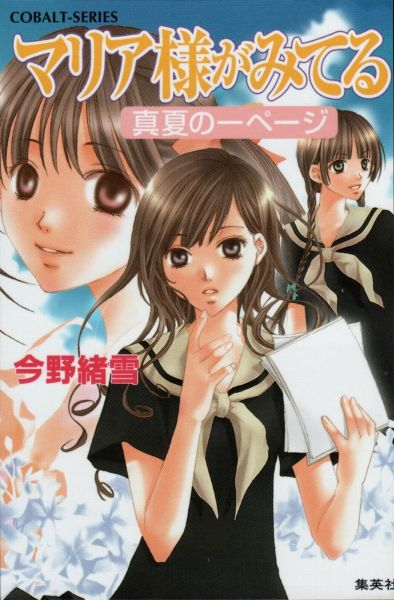
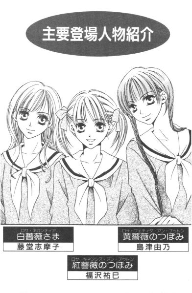
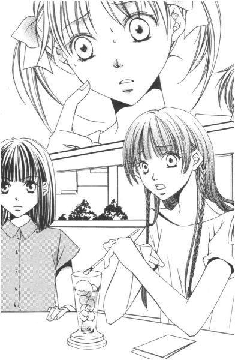
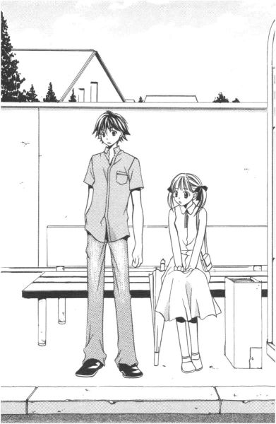
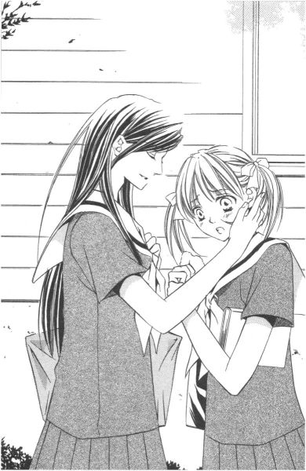
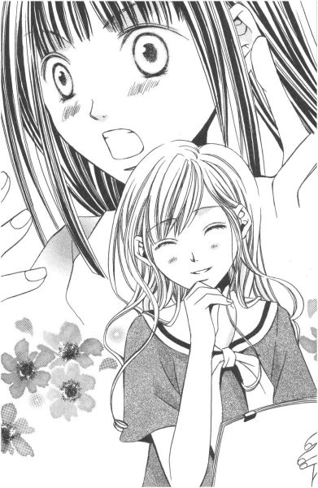
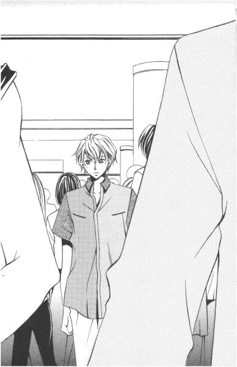
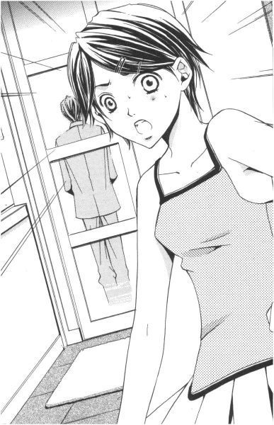

| [今野緒雪] マリア様がみてる13 | |
| 今野緒雪 | |
| (2015) | |
|
マリア様がみてる
真夏の一ページ
今野緒雪
|

もくじ
略してＯＫ大作戦（仮）
オファーとプロット
食えない男
いざ、決行
おじいさんと一緒
ネタはほうきとちり取りで
待ち合わせの場所まで
タクヤ君を探せ！
黄薔薇☆絵日記
七月○日（土） 晴れ
八月△日（日） くもり
八月×日（土） 晴れ
あとがき


マリア様がみてる 真夏の一ページ
「ごきげんよう」
「ごきげんよう」
さわやかな朝の挨拶が、澄みきった青空にこだまする。
マリア様のお庭に集う乙女たちが、今日も天使のような無垢な笑顔で、背の高い門をくぐり抜けていく。
汚れを知らない心身を包むのは、深い色の制服。
スカートのプリーツは乱さないように、白いセーラーカラーは翻らせないように、ゆっくりと歩くのがここでのたしなみ。もちろん、遅刻ギリギリで走り去るなどといった、はしたない生徒など存在していようはずもない。
私立リリアン女学園。
明治三十四年創立のこの学園は、もとは華族の令嬢のためにつくられたという、伝統あるカトリック系お嬢さま学校である。
東京都下。武蔵野の面影を未だに残している緑の多いこの地区で、神に見守られ、幼稚舎から大学までの一貫教育が受けられる乙女の園。
時代は移り変わり、元号が明治から三回も改まった平成の今日でさえ、十八年通い続ければ温室育ちの純粋培養お嬢さまが箱入りで出荷される、という仕組みが未だ残っている貴重な学園である。
──とはいえ、今は夏休みだから。
スカートのプリーツも白いセーラーカラーも気にすることなく、バタバタ走り回ったりもしている。
おやおや、お嬢さま方。
いついかなる時も、天からマリア様がみていらっしゃることをお忘れなく。
略してＯＫ大作戦（仮）
オファーとプロット
１
「何？ 古語辞典？」
視線を感じて振り返った。
「あ、うん。......いや」
歯切れの悪い返事をするのは、うんざりするくらい自分に顔が似ている弟。
「何なのよ」
「うん」と「いや」は、プラスとマイナスくらい正反対な単語のはず。あ、最初の「うん」を「いや」で訂正したのか、なんて納得して、祐巳は机の上のブックエンドから抜き出した古語辞典を引っ込めようとしたのだが、予想に反して祐麒はそれを受け取って「ありがとう」なんてちゃんとお礼の言葉を述べてから回れ右をする。じゃあ、さっきの「いや」はどこへ行ったんだ、って話だ。
「祐麒」
祐巳は、白のランニングシャツの後ろ姿に声をかける。避暑地から帰ってきたばかりの弟は、まるで海にでも行ってきたみたいに肌が小麦色に焼けていた。学園祭の打ち合わせとか何とか言って、あっちではずいぶんと遊び回っていたのだろう。
「まだ他に借りたい物でもあるの？」
「いや」
あれま。ここでも、また「いや」ですか。でも、何か煮え切らない態度なんだな。だから祐巳がその先にスタンバイしていそうな言葉を待っていると、祐麒はちょっと目を泳がせてから言った。
「えーっと、エアコンの設定温度、下げていい？」
「だめ」
もちろん、祐巳は即却下する。
「この部屋、暑い」
「丁度いいって。あんまり寒くすると、身体に悪いんだよ」
一般的に、男の方が暑がりだってよく聞くけれど、その統計、福沢家はドンピシャリで当てはまっていた。お父さんも祐麒と同じく暑がりで、夏が苦手。お母さんと祐巳は寒がりで、冬が辛い。
「じゃ、暑すぎるのは身体にいいのかよ」
祐麒は諦めきれずに、ランニングシャツの胸あたりをつまんで、わざとらしくパタパタと風を送り込んだ。
「そうは言わないけど。温度下げると、今度は私が寒くなるでしょ」
「何か着れば？」
「ここ、私の部屋だよ。あんたが脱げば？」
「これ以上、どう脱げというんだ」
「......」
ごもっとも。
ランニングに短パン。もうすでに、乙女の部屋にお邪魔できるギリギリの線。ま、これだけ面積の狭い衣類だ、脱いだところでそれほど涼しくはならないだろうけれど。
「部屋、帰る？」
祐巳はちょっと意地悪く言った。
「帰んない。俺の部屋はマジやばい」
「灼熱地獄？」
「うん。十五分で熱射病になるね」
だから置いてください、と素直に頭を下げるので、祐巳は「よしよし」とうなずいた。そして可愛い弟のために、エアコンの設定温度を一度だけ下げてやることにする。武士の情けだ。
ピッ。
実は、祐麒の部屋、現在エアコンが壊れているのだ。
いつから調子が悪かったのかはわからない。けれど、以前から何となく変な音が聞こえたり聞こえなかったりはしていたらしい。で、昨日の夕方、合宿から帰ってきてスイッチ入れたら、間違っても「何となく」なんて表現できないような大きな音で一声鳴いて、それっきり「うん」とも「すんとも」動かなくなってしまったそうな。
祐麒曰く、「あれは、たぶんエアコンの断末魔だったんだ」──って、おい。まだ死んだとは限らないだろう。修理すれば直るかもしれないんだから。
その修理であるが、電機屋さんに電話したんだけれど、何か混み合っているらしく、明後日以降じゃないと来られないという話なのである。で、祐麒は今日の朝から、祐巳の部屋の片隅を借りて夏休みの宿題をしているわけだ。より快適な空間を求めるならば、図書館でも何でも行ってればいいんだけれど、そこまではしない。
この暑い中、自転車こいで出かけるよりは、肩身の狭い思いをしながらでも、姉の部屋にお世話になる方がいいようだ。
（あれ？ でも）
エアコンの温度を下げてって、そんなに言いにくいことじゃないんじゃないかな、と祐巳は椅子に座り直してから、はたと気づいた。
何か、さっきのは......、そう、言わなくちゃいけないことがあるのに、そのタイミングがつかめないでいるような、そんな「......いや」だったんじゃなかったろうか──なんて。
くるりくるくる。椅子を揺らしながら考える。
しばらくそうしていて、それでもやっぱり気になったので、ガラスの天板の小さなローテーブルの前に座って辞書をくり出した弟のつむじに向かって、祐巳は声をかけてみた。
「......祐麒？」
──と、それにかぶるように祐麒が顔を上げて大声で言った。
「あの、祐巳！」
「な、何？」
血走ってこそいないが、目にはかなり力が入っている。その、意を決した、といった表情に、祐巳は一瞬身構えた。
「あのさ」
「う、うん」
何を言い出すつもりかわからないが、ここはどーんと受け止めるのが年長者としての威厳というもの。年の差、わずか一年未満。とはいえ、それでも姉であることにはかわりないのだから。
「花寺学院高校の学園祭に、今年もリリアン女学園高等部の生徒会の人たちは手伝いに来てくれるんだよね？」
「......って話だけど？」
話のテーマはどうやら、学園祭がらみ、らしい。だが、まだまだ核心部分は見えてこない。
「二学期になってすぐにでも、うちの学校に打ち合わせをしに来てくれることになってるんだけどさ」
「あ、そうなの？」
その辺りのことは、令さまが連絡窓口となっているので、祐巳はあまりよく把握してはいないのだ。
「でさ。ものは相談なんだけど。その前に、顔合わせできないかな、......なんて」
「えーっ!?」
予想外の申し出だったから、祐巳は思わず大きな声を出してしまった。すると、祐麒はあわてて両手を振って言葉をつなぐ。
「や、何、そんな大した話じゃないんだ。ただ、準備とかの関係で、少しでも早く打ち合わせを始められれば助かる......っていうか」
ごにょごにょ。
「正直、企画が煮詰まっていて、リリアンからの助っ人にどこまでやってもらえるのか打診したい、ってのもある......みたいな」
「......」
黙って聞いていると、祐麒はちょっと上目遣いで「やっぱ、だめかな」と言った。ということは、ふーん、なるほど、ダメもとで言ってみただけなわけだ。
「それだけ？」
祐巳は、腕組みして尋ねた。
「それだけ、って？」
「そこに、不純な気持ちは入っていないの？」
「ふ、不純!? 不純って何だよ」
今度は、祐麒が目をむいた。そこで祐巳は、人差し指を上に立てて「例えば」と言った。
「真正のお姫さまである祥子さまを一目拝みたい、とか。可憐な志摩子さんとお近づきになりたい、とか。宝塚のトップスターばりの令さまに竹刀で叩かれてみたい、とか」
祐巳は、リリアン女学園の麗しの薔薇さま三人を、一人一人うっとりと思い浮かべた。なのに祐麒ったら、少し含み笑いをして姉の話を茶化してくれる。
「前の二つはともかく、最後のはどうかな」
「例えば、の話でしょ。そう言ったでしょ」
「例えば、という話ならさ」
確認して、祐麒は真顔に戻った。
「そういう気持ちもなくはないんじゃないかな。リリアン女学園の生徒ってだけで、野郎どもには未知の世界だから、興味がないわけないじゃないか。......もちろん、口が裂けてもそんなこと白状しやしないけどさ」
野郎ども。未知の世界。興味。なんか、聞いただけでクラクラする。男嫌いの祥子さまの耳には、絶対に入れちゃいけない種類の言葉だ。
「十分に、大した話、じゃないの」
「うん。そうだね。ごめん」
祐麒は、少ししゅんとなった。かわいそうに。学校の仲間と姉との間で、板挟みになってしまったわけだ。
「あんた、先輩たちにパシリやらされてるわけ？今年の花寺の生徒会長って、いったいどういう人なのよ」
「そのうち嫌でもわかるよ」
「そう」
どんな人でも、弟に色目を使うような前生徒会長、柏木さんよりましかな、と祐巳は思った。でも、祐麒をビシビシしごくような乱暴な人だったら、それはそれで困るけれど。
「あのさ、祐巳。これは正式な申し込みじゃないんだし、断っていいよ」
祐麒はもう、かなり及び腰になっている。
「うん」
うなずきながら祐巳は、この話、独断で断ってしまっていいのだろうかと考えていた。
確かに正式なオファーじゃない。
互いの学校の生徒会に片足突っ込んでいる者同士が、たまたま同じ屋根の下で暮らす姉弟だったから、耳に入ってきた話。
でも。何でだろう。これを今この場ですっぱりと切り捨ててしまうとなると、なぜだか「ちょっと待った」ってブレーキがかかるのだった。
待てよ、これは思案のしどころだ、って。
「ふーむ」
「考えてみたらさ、夏休み中に学校通さないで集まるってことは、自由参加って形にしかならないわけだし。どだい、無茶な話なんだよな」
「ちょっと黙っていてよ、祐麒」
横でゴチャゴチャ言ってる弟を一喝。お姉さんは今、普段使わないような脳味噌をフル稼働させて考えているんだから、邪魔しないで欲しい。
（あれをこうすれば、ああなるでしょ。それをうまく利用できれば、もしかして──）
チラッチラッと顔色をうかがう祐麒を無視して、祐巳はポンと手を叩いた。
「よし、わかった！」
「あの......祐巳？」
「取りあえず、保留ね」
「えっ？」
「聞こえなかったの？ 保留よ。参加の方向で検討してみるから」
「ええっ!?」
そんなにビックリすることはないんじゃないかってくらい、祐麒は仰け反り、それからすがりつくようにすり寄ってきて言った。
「ゆゆゆゆ、祐巳っ。お前ってば、いつからそんな権力がっ!?」
「ばかね。だから検討だってば。とにかく、黄薔薇さまである令さまに相談してみないことには、何ともいえないけど」
善は急げ。机の抽斗から生徒手帳を取り出して、電話番号をチェック。
「令さま？ あれ、祥子さんじゃないの？」
電話の子機を手渡しながら首を傾げる祐麒に、祐巳はうなずいた。
「うん。だって」
祥子さまのことを、本人に相談するわけにはいかないでしょう──って。
２
「──まあね」
レモネードをストローでずずずっとすすった後で、祐巳はため息をついた。
「令さまに連絡すれば、もれなく由乃さんがついてくるって、よーく考えなくてもわかることだった」
「何よ。それじゃ、まるで私が金魚の糞みたいじゃない」
ティーフロートに浮かんだバニラアイスをストローで突っつきながら、由乃さんは唇を突き出す。しかし、その横でストロベリーシェイクをかき混ぜる令さまは、苦笑しながらはっきりと言い切った。
「あ？ みたいじゃなくて、金魚の糞そのものだったじゃない、由乃。私が出かけるのを見つけて、しつこく『どこ行くの』とか『誰と会うの』とか聞いて、相手が祐巳ちゃんだってわかると、当然のようにくっついてきたんだから」
「ふん。別に、令ちゃんと出かけたかったわけじゃないもん。私は、祐巳さんに会いにきただけだもん」
プーッと膨れる様子は、金魚ならぬ河豚である。由乃さんは、「大好きな令ちゃん」に図星を指されて面白くないのだ。
「はいはい。じゃあ、そういうことにしておきましょ」
「あー、嫌な言い方」
ポカポカと、令さまのたくましい二の腕をグーで叩く由乃さん。あの、そういう痴話喧嘩は、できれば家の外に持ち出さないで欲しいんだけど。ただでさえこの時期、日本全国暑いんだから。
「由乃さまが金魚の糞となると、......私はいったい何の糞になるんでしょうね」
黙ってそのやり取りを聞いていた乃梨子ちゃんが、ぼそりとつぶやく。すると、ご機嫌斜めの由乃さんはちょっと棘のある口調でこう言った。
「さしずめ、メダカかなんかじゃないの？」
「えっ、それじゃ、私がメダカってこと？」
志摩子さんが、迷惑そうな、それでいて愉快そうな、複雑な表情をして尋ねた。乃梨子ちゃんがメダカの糞ならば、自動的に志摩子さんのメダカは確定する。
「ねえねえ。メダカも糞ぶら下げて泳いでいるの？」
「えっ」
祐巳の言葉に、一瞬みんなの顔が引きつった。何か、間違った発言してしまったのだろうか、わからないが、我に返ったように令さまが、
「......そろそろ本題に入ろうか」
と、シェイクをちょっとむせ込みながら提案したのだった。
本当はちょこっとだけ令さまの意見を聞こうと思っただけなんだけど、何だか、話が大きくなり過ぎたなぁ、と祐巳は思った。六人中五人といったら山百合会のほとんどが、というより祥子さまを除いた全員が集まってしまったことになる。
相談があるんですけれど、と令さまに電話したのは、今日の午前中。そうしたら令さまは、気を利かせて志摩子さんにも招集をかけた。実はその時、偶然にも乃梨子ちゃんが志摩子さんのお宅、というかお寺を訪ねていて、そのまま二人一緒にここまでやって来た、と、こういうわけである。
Ｋ駅から少し歩いたところにある喫茶店は、平日だけど夏休みだから結構繁盛していた。三時という、ちょうどお茶を飲みたくなる時間帯ってこともあるかもしれない。令さまと由乃さんが一足先に来て順番待ちしてくれていたから、待ち合わせの時間にはうまいこと席が空いて五人は炎天下の中でひからびずにすんだのだった。
「──つまり、祐巳ちゃんは弟君のもってきたその話を受けたい、というわけね。祥子のために」
大雑把であるが、事前に電話で内容を聞いていた令さまが確認する。
「そんな『受けたい』なんて言うほど積極的ではなくてですね、受けたらどうかな、くらいの気持ちなんですが」
多少及び腰で、祐巳は答えた。山百合会の関係者ではあるけれど、所詮はつぼみ。こうしましょう、ああしましょう、なんてグイグイ引っ張っていくような立場ではないのだ。
「うーん。確かにね。私もそろそろ対策たてないと、って気はしていたんだ」
令さまの言葉に、志摩子さんと由乃さんも大きくうなずく。──が、一人首を傾げる人ありけり。
「あの、すいません。初心者なんで、どういうことかよくわからないんですが」
乃梨子ちゃんが手を挙げた。今年度からリリアン女学園の仲間になったんだから、彼女が事情を飲み込めていないのは仕方ない。
「ズバリ、祥子さまは男嫌いなの」
由乃さんが冷ややかに言った。
「紅薔薇さまが......。ああ、そうなんですか」
「あまり驚かないね」
令さまが尋ねる。乃梨子ちゃんは、首を小さく横に振った。
「いえ。驚いてますけど。あの、紅薔薇さまがどうこうじゃなくて、やっぱり女子校の中には男の人がだめだって人もいるんだなぁ、って。......ああ、そうか。花寺学院は男子校だから、男嫌いだと学園祭の手伝いに行くのに支障があるわけですね」
そういうことである。
「乃梨子ちゃん、頭の回転が早くていいね」
「そうですか」
そうですとも。年下とは思えないこの落ち着き。うらやましいくらいだ。
乃梨子ちゃんはクールだ。クールっていうのは、どうやら年齢を重ねて身につくものではないものらしい。それを悟って、祐巳は少なからずショックを受けた。だって、そうなると自分は三年生になってもこのままである可能性があるわけだから。
「あれ？ でも、去年はどうなさったんです？すでに、紅薔薇さまは 紅薔薇のつぼみだったんでしょう？」
乃梨子ちゃんが首を傾げた。
「去年も一昨年も、逃げ回って、結局あっちの学園祭には行かなかったの。まあ、まだつぼみだったことだし、それも許されたんだけど」
「でも今年は」
「その通り。紅薔薇さまだから、行かないわけにはいかない。そこで、祐巳ちゃんは考えたわけだ」
令さまが「どうぞ」って振るので、祐巳は立ち上がって左手は腰に、右手は天井を指さし、シャキーンってポーズをとった。
「名付けて『いきなり男子校の中に投げ込むとショックが大きいから、徐々に慣らしていって男嫌いを克服してもらおう大作戦』！」
「作戦名が、若干長すぎやしませんか」
「......そ、そうね。考え直す余地はありそうね」
ああ、本当にクールだ。乃梨子ちゃん。
「夏休みのうちに、花寺の生徒会に慣れておいていただく、ということ？」
志摩子さんが尋ねる。
「そ」
祐巳は着席してうなずいた。
「祥子さまさ、なぜかうちの弟とかは大丈夫なんだ。たぶん、それって先入観と慣れの問題だと思うの。以前、先代の薔薇さまたちが言っていたけど、祥子さまの男嫌いは生まれつきのものじゃないんだ、って。だったら、やり方によっては克服できるんじゃないかな」
「それで、徐々に、なわけね」
「私の弟が側にいて、『この人たちは安全だ』ってサインを送りつづけていれば、祥子さまだって安心すると思うの。そうしたら、二学期になって花寺に行っても、そんなにはパニックにならないんじゃないかな」
「なるほど。それは一理あるわ。熱いお風呂にはいきなり入れないけれど、温めのお湯からスタートして段々熱くしていくと、意外に入っていられるものだものね」
ふむふむ、って由乃さん。喩えとしてはわかりやすいけれど、祥子さまの男嫌いとお風呂を同列に並べるのは、やっぱり何か間違っている気がするんだけれど。
「話はわかった。それで？ どこでどんな風に会うのが一番いいのかな。祐巳ちゃんにあてはあるの？」
「そこ、なんですよね」
祐巳はほっぺたを人差し指で軽くかいた。
「いい場所を、なかなか思いつけなくて」
夏休みの後半、山百合会は学園祭がらみの用事で頻繁に集まることにはなっている。けれど、だからといって、学校の許可もないのにそこに花寺の生徒を呼ぶわけにはいかない。祐麒は、花寺の教室ならば今からでも準備できると言っていたが、いったいどんな魔法を使ったら、男嫌いの祥子さまを男子校まで連れていけるというのだ。
「それ以前に、祥子さまをその集いに来させることは可能なの？」
「うっ」
由乃さんたら、痛いところをつく。確かに、祥子さまのために計画するその集まりに、本人不参加では意味がなかった。
「絶対に出てきてもらうにはどうしたらいいんだろう」

「絶対......？」
令さまと二年生の三人は同時に、祥子さまを手の平の上で転がしてきた一人の人物を思い浮かべた。「絶対」という言葉が誰よりも似合う人。
「つまり、蓉子さまならどうするか、ってことでしょう？」
そして、全員が導き出した結論は。
「命令する」
「──だよね」
下手な小細工はしない。ただ一言。「祥子。出なさい」──これだ。
「でも、この中で紅薔薇さまに命令できる方、いらっしゃいます？」
乃梨子ちゃんの一言で、皆顔を見合わせる。
「命令できないこともないけれど。私がしたところで、自分が嫌なことは絶対に聞かないね、祥子は。どう思う？白薔薇さま」
令さまが志摩子さんに言った。
「もちろん、私だって無理です。同じ薔薇さまを名乗っているとはえ、年下ですもの。命令なんて」
志摩子さんも首を横に振る。すると、今度は自然と祐巳に視線が集中する。
「ちょっと待って。妹の私が、お姉さまに命令できるわけないじゃないですかっ」
何を期待しているんだ、みんな。よく考えればわかることだろうに。
「......そうよね。たとえ、祥子が祐巳ちゃんにぞっこんだとしても、蓉子さまとはまったく違う関係を築いているんだものね」
誰一人として蓉子さまにはなれないことを悟ったので、ここはやはり別の道を模索することにした。
「じゃ、聖さまや江利子さまならどうするかな？」
「............だまし討ち？」
「それ、やりそう」
もちろん、蓉子さまも加わって。そもそも、去年の学園祭でやった舞台劇『シンデレラ』で、祥子さまに内緒で王子役に柏木さんをキャスティングしたのは、あの人たちである。
「ちょっと、それは」
だまし討ちと聞いて、志摩子さんが眉をひそめた。が、由乃さんは怯まない。
「白薔薇さんたちは黙っていて。あなたたちだって、結局は荒療治が効いて、今はお幸せなんでしょ」
それを言われちゃ。志摩子さんも乃梨子ちゃんも口出しできない。彼女たちもまた山百合会の仲間たちにだまし討ちにあって、結果いい方に転んだサンプルなわけだから。
「偶然を装って、鉢合わせ。で、逃げられない状況をつくる」
令さまがテーブル上で、祥子さまや花寺の生徒に見立てたガラスコップを移動させながら確認する。すると、お水のお代わりを要求しているのだと勘違いしたウエイトレスが、五人すべてのコップに冷たい水を満たしていった。
「でも、どこで？ 街中なら、逃げられるよ。それに、そんなにうまく偶然の状況を作れるかな？わざとらしいと、祥子さまにばれてかえってこじらせちゃいそうじゃない？」
由乃さんが頬杖をついて「うーん」とうなった。
「こういう喫茶店とかは？」
深い意味もなく、祐巳は提案してみた。しかし。
「私たちはこれから頻繁に学校で会うってのに、わざわざ祥子さまを外に呼び出すの変じゃない？それで、そこにたまたま花寺の生徒がいるわけ？祥子さまじゃなくても、納得できないよ」
すぐさま却下。
「そっか。どちらがいても不自然じゃない場所じゃないとだめなわけだ。でも、そんな場所あるのかな」
すると、「黙っていて」の言葉におとなしく従っていた乃梨子ちゃんが、久しぶりに口を挟んだ。
「祐巳さまのお宅は」
「うち？」
「だって、弟さんの仲間が福沢家に遊びに来ることは不自然じゃありませんし、私たちが祐巳さまのお宅に集合しても変ではないです」
確かに。娘の友達と息子の友達が、たまたま同じ日に集合したっておかしくはない。おかしくないけど──。
「......うちか。いいけど、狭いからなぁ」
祐巳は素早く計算してみた。
山百合会で六人、たぶん花寺の生徒会もそれくらい。もちろん、十数人ならば収容できない人数じゃないけれど、想像するだに息苦しい。
「じゃ、うちの道場にする？ 稽古が休みの日ならいいよ」
「でも、令ちゃん。それじゃ花寺の生徒が自然に集まれないよ」
「あ、そうか」
由乃さんに指摘されて、令さまはその案をすぐに引っ込める。場所選びは、簡単なようでなかなか難しい。
「いっそ、祥子の家に押し掛けちゃう？」
「花寺の方はどうするんです？」
「柏木さんを使う」
「ああ、そうか」
そこで、乃梨子ちゃんが再び挙手。
「あの、その柏木さんというのは」
「あ、祥子の従兄で婚約者。花寺の前生徒会長で、未確認だけど同性愛者という情報もある人物」
令さまは簡潔に言い放ったけれど、こうやって考えてみると、祥子さまってかなり厳しい環境に置かれているんじゃなかろうか。
「柏木さんが、後輩のために広い場所を提供した、という形はどうだろう。柏木さんにとって、小笠原家はお母さんの実家で、お祖父さんも住んでいるわけだし。時々、遊びにいってるみたいなんでしょ」
「はい」
祐巳はうなずいた。
「そんな感じではありました」
正月に小笠原家にいた柏木さんは、見ていて悔しくなるくらい、あの家になじんでいたっけ。
「でも、あの柏木さんが、私たちに手を貸してくれるわけ？」
学園祭以来会っていないという由乃さんにとっては、柏木さんは未だギンナン臭い惨めな王子さまであるらしい。でも。
「言えば、手伝ってくれると思う......けど」
祐巳はつぶやいた。
「何で？」
由乃さんが尋ねる。
「あ、いや。何となく。花寺の卒業生として、後輩の力になるっていうか。あの、祥子さまのためでもあるわけだし」
まずい。
祐巳ちゃんのご用ならいつでも承る、っていう柏木さんの言葉を思い出して、つい口を滑らせてしまった。
別に隠すこともないんだけど、変に誤解されるのも嫌なので黙っていた方がいい。そもそも、柏木さんにとっての「祐巳ちゃん」は「ユキチのお姉さん」と同意語なんだから、勘違いしてもされてもいけないのだ。
一人で勝手にあわててしまったが、由乃さんはそれ以上踏み込んで質問してこなかった。柏木さんのことなんて、誰もあまり興味はないのだ。
「そうね。祥子が祐巳ちゃんの弟君と会ったのも、お正月に柏木さんが祥子の家に連れてきたからなんでしょう？」
「ええ、まあ」
「シチュエーションとしては、不自然ではないということだわ」
じゃあその線でいきましょう、と、全会一致で決まった。
けれど。
散会直前に、祐巳は令さまから大変な宿題が与えられてしまったのだった。
「祐巳ちゃん。それじゃ柏木さんに話をつけてきてね」って。
──そんな、殺生な。
食えない男
１
翌日。
ここは旗本屋敷か北町奉行所か、ってなくらい大きな木造の門前に立って、福沢姉弟はため息をついた。
「予想以上にでかいな」
「......うん」
「祥子さんの家ほどじゃないにしても、個人の家としては反則だよ。これは」
「だね」
もちろん、ここの奥さまは元天下の小笠原家のお嬢さまだったわけで、その嫁ぎ先であればそれ相当のお家であることは予想に難くはなかったけれど。でも、でも、それをふまえた上でも、その敷地の広さときたら、もう笑っちゃうくらい広いのだった。このお庭に福沢家が何軒入るだろうか、って祐巳は本気で計算しようかと思った。
というわけで、ここは柏木優さんの住んでいる家なのである。
山百合会の秘密会合の翌日、令さまから仰せつかった任務遂行のため、バスと電車とバスを乗り継ぎ、加えて徒歩十分かけて、未知の土地までやって来た。
祐麒には、当然お供になってもらう。そもそもの発端は、祐麒の持ってきた話からだったわけだし、花寺学院高校の元卒業生である柏木さんを訪ねるには、その後輩である現役花寺生という立場は非常にわかりやすくていいのだ。
「俺、帰りたくなってきた」
「私も」
暑い。
日傘をさしているのに、サマードレスからむき出しになった肩や腕がひりひりする。
午後の二時。一番暑い時間帯である。
この門を見上げて、五分くらい時間は経っているだろうか。訪問する約束はしたけれど、柏木さんに会わなくてももう任務は完了したも同じだった。話をしなくても、この家を見れば作戦変更は必至。
「ね」
「うん」
どこか近くで公衆電話を探して、行けない旨連絡すればいい。祐麒と祐巳は顔を見合わせ、以心伝心でクルリと回れ右をした。
と、同時に。
「そりゃないよ。福沢姉弟」
背後から声がした。
「ここまで来ておいて、寄らずに帰るわけ？」
振り返らなくても、わかる。この一見さわやかな声。プラス、ホストのような艶っぽさ。プラス、底の方に見え隠れする何とも表現しかねる毒気。
間違いなくギンナン国の王子、柏木優、その人である。
「察するに、その箱はメープルパーラーのフルーツゼリーセレクション。僕の大好物なんだよね。洋酒がきいていてうまい。ああ、食べたいな。誰かそれを手みやげに、ふらりと我が家に立ち寄ってくれないだろうか」
そうまで言われて、それでもなお逃げきれる人っているだろうか。福沢姉弟はビデオテープを巻き戻しするみたいに、キュルキュルと回れ左をして元の位置へと戻った。
「ご、ごきげんよう。柏木さん」
「どうも、柏木先輩。今日は、突然お訪ねしてしまい」
笑顔を引きつらせ、無心されたメープルパーラーの箱を差し出す。柏木さんは、それを満足そうに受け取って言った。
「ああ、いい子たちだ。素直でよろしい」
ついでに二人とも頭を撫でられてしまったが、もう反発する元気もない。まったく、いつから門の裏でスタンバイしていたのか知らないが、柏木さんに行動を読まれきっていた福沢姉弟の完敗なのであった。
「ほら、二人とも入って入って」
もちろん、フルーツゼリーを献上すれば、それで許してくれるような柏木さんじゃない。祐麒の腕をつかんで、あっという間に敷地内に連れ込む。弟の身が心配で祐巳がついてくるところまで計算済みなんだから、本当に腹が立つ。
門を一歩入ると、笹とか松とかの庭木が日陰を作ってくれているせいか、路上よりずっと涼気を感じた。
門から真っ直ぐ伸びた石畳の先には、玄関がある。間口が広くて、上がりがまちが高くて、たたきには階段をつくるように大きな石が置いてある。正面は低い衝立で簡単な目隠しがしてあって、一言で言うなら、旅館か料亭かって感じの雰囲気なのであった。
「さ、祐巳ちゃんも上がって」
「お邪魔します」
「ああ、靴は揃えなくってもいいよ」
そうはいっても。最低限の礼儀として。
祐巳は脱いだサンダルの方向を変えるべく、後ろ向きになった。屈んだ瞬間、不意に背後から声がした。
「いらっしゃいませ」
「ひっ」
思わず、たたきの石に頭をぶつけそうになった。驚いて振り返ると、そこにはいつの間にか初老の女性の姿が。
「──！」
今度はかろうじて声には出さなかったけれど、祐巳はもう一度ドキンって心臓が飛び出そうになった。薄暗い日本家屋に、白っぽい着物をきて正座した女の人がぼうっと浮かび上がって見えるのは、理屈とかそっちのけでかなり怖かった。
「高校の後輩の福沢君とそのお姉さん。祐巳さんはさっちゃんの後輩なんだよ」
柏木さんがさわやかに二人を紹介するのに合わせて、あわてて頭を下げる。一瞬、「柏木さんのお母さん!?」と身構えたが、それにしてはやや年をとっているようだし、二人の会話から窺うにどうも違うみたいだ。
「別に構わなくていいよ、トミ。僕が接待するからね」
「はい。かしこまりました」
どうやらその人は幽霊でもお母さんでもなく、この家のお手伝いさんらしい。でも、相手が誰であろうと今の祐巳には同じこと。
（あーん、「ひっ」て言っちゃったよ。「ひっ」て言っちゃったよ、どうしよう）
廊下を歩きながらどんどん落ち込む。柏木さんも柏木さんだ。心の中で逆恨みする。祥子さまの後輩なんて紹介されたら、祥子さまにだって迷惑がかかってしまうじゃない、って。しかし、当の柏木さんときたら。
「どうしたの、祐巳ちゃん。顔赤いけど、ここ暑い？」
なんて、声をかけてくる。さっきの「ひっ」は聞こえなかったようだ。
「いえ、涼しいです」
実際、この家の中はひんやりとして気持ちよかった。古い日本家屋のようでいて、どこか新しくも見える。
旅館を思わせた玄関同様、中身も旅館みたいにだだっ広い。おまけにやたら廊下が長く、途中曲がりくねったりして、まるで迷路みたいなお屋敷だった。
ここで迷ったら、自力で玄関まで戻れまい。思わず祐巳は祐麒のシャツの裾を握った。方向感覚は、祐麒の方が優れている。
「別に僕の部屋でもいいんだけれど、寝室も兼ねているから、若い女性をご招待するのには相応しくないと思ってね」
そう言って柏木さんが案内してくれたのは、離れにある小さな和室だった。
「若い男性なら相応しいんですか」
聞き捨てならない言葉を耳にして、思わず祐巳は突っ込みを入れてしまった。
「うーん。そうだね。祐麒一人だったら、僕の部屋に通したかな」
柏木さんは笑いながら答える。
「一人じゃ来なかったよ」
祐麒が顔をしかめた。
「そう言わずに、いつかおいで。精一杯おもてなしするよ」
軽口ってわかっていても、ドキドキする。柏木さんのは、冗談が冗談に聞こえないから。いや、冗談ではなくて本気で言っているのかな。
「ここ、お茶室ですか」
ぐるりと見渡して、祐巳は尋ねた。
「うん。ああ、そうだ。よかったら、お茶たてようか？でも、フルーツゼリーには合わないかなぁ」
「いえ、結構です」
祐巳と祐麒は同時に辞退したのだが、柏木さんはすでにお茶の道具を出し始めている。
「面倒だから、ポットのお湯つかうね。真似しちゃだめだよ」
真似、って言われても。福沢姉弟は顔を見合わせた。どちらもこれまで本格的なお茶なんてたてたことなかったし、これからだってたてる予定はなかった。
「ほら、立ってないで、適当に座る」
柏木さんに促され、本当に適当な位置に正座した。お茶室における上座や下座の決まりって、よくわからない。
シャカシャカシャカシャカ。
茶筅がたてる音が、心地いい。茶道っていうのもいいなぁ、なんてその様子を眺めていると、柏木さんは手を止めて立ち上がって床の間の側の小さな戸棚を開けた。
驚いたことに、中は冷蔵庫になっていて、柏木さんは氷だの水だのを取り出すと、何事もなかったようにまた閉めた。
「見えると、風流に欠けるだろう？ でも、ないと不便だし」
ということは、エアコンもどこか見えないところに隠してあるのだろう。部屋を閉めきったままでいるのに、どうしてここまで涼しいんだろう、ってさっきから不思議に思っていたんだ。
柏木さんは先ほど泡だてたお茶を、氷の入ったグラスに注いで水で割った。
「はい、どうぞ」
出されたアイスグリーンティーは意外においしかったけれど、製作過程は見なくてもよかったかな、ってうのが正直なところの感想である。
「さてと」
一応「接待」なる義務を済ませた柏木さんは、手みやげであるゼリーの入った箱を開けながら、さらりと言った。
「僕に何をして欲しいんだい？」
まるで、白桃とパイナップル、どっちがいい？とでも聞くように。
（──ああ、本当に）
食えない男だ、柏木さんて。
２
「ふーん。さっちゃんの男嫌いって、そんなに深刻なの？」
ことの顛末を一通り聞いて、柏木さんは言った。巨峰ゼリーを、しっかり食べ終えた後のことだ。
「はあ」
その原因の一つを作ったという自覚は、ゼロか。困った人だ。
「それじゃ、子供作れないなぁ。うーん、小笠原家どうしよう」
「えーっ」
そっちの心配かい、って。思わず心の中で突っ込みを入れる。そんなことより、どうして祥子さまの心のことを気遣ってあげられないんだろう。話には聞いていたからそれほどビックリはしないけれど、やっぱり「こういう人なんだ」ってほとほと呆れる祐巳である。
「小笠原のお祖父さまの孫って、僕とさっちゃんだけしかいないんだよね。あ、僕が知らないだけで、もしかして余所に隠し子とかいるのかな。そうなりゃ、話は別だけど。うーん、けどそれはそれで一悶着おこるか......」
おいおい、そういう深刻な話を含み笑いで思案するな。そういう態度に業を煮やして、祐麒が口を開いた。
「先輩さ、祥子さんと本気で結婚する気なの？」
「あれ、ユキチ。妬いてくれてる？」
にやけた顔をする柏木さん。祐麒はというと、もちろんあからさまにうんざりとした顔をしている。
「あんた、本当に頭の中いつでもお祭り騒ぎだな。俺は、祥子さんのことを心配しているんだよ」
「さっちゃんのこと？」
「幸せにできないんだったら、婚約解消して自由にしてやれよ。かわいそうだろう？」
おー、よくぞ言ってくれた、弟よ。祐巳は心の中で拍手を送る。
「ふーん。そんなこと言っちゃうわけ。だったら、その言葉の責任をとって、お前が幸せにしてやれば？僕は別にかまわないよ。だって、可愛いユキチが頭を下げて頼んできたのなら、大切なさっちゃんだが譲ってやるしかないだろう」
「ど、どうして、そういう発想が生まれるわけ？」
祥子さまをかばっただけなのに、強引にカップルにさせられそうになった祐麒は、顔を真っ赤にして憤慨した。もちろん祐巳も、そのご意見には同意できない。お姉さまは大好きだし弟は可愛い。だけど、二人が恋人とかになるのは、ちょっと勘弁して欲しい。その気持ちは、今のところうまく自己分析できていない。だから、どうしてと聞かれたら、ただ、嫌なものは嫌だとしか答えようがなかった。
「さっちゃんが大丈夫な若い男って、今のところユキチと僕ぐらいなものだからなぁ。爺さんとか、就学前の少年くらい年が離れちゃうと、案外平気みたいだけど」
柏木さんのその喩えは的はずれじゃないかな、って、聞いてて祐巳は思った。大丈夫な男というのは、むしろ問題外という意味ではないのか。
そもそも、祐麒が大丈夫なのは、たぶん「妹」の実弟であるという安心感によるところが大きいわけだし。柏木さんの場合は、可愛さ余って、っていうか、一度幻滅しちゃったから、憧れの人からただの親戚に格下げになっただけの話。もちろん、老人や幼児に至っては、男嫌いの「男」にも入れてもらってないわけだけれど。
「ユキチとさっちゃんの子供だったら、僕、すごく可愛がれると思うな。あ、ユキチ。小笠原グループのことは、僕がきっちり引き受けるから心配しなくていい。だからさ、子供だけ僕にくれないかな？」
まだ言ってる、この人。
柏木さんて、時々すごくおばかに見えることがある。花寺の大学に優先で入れたくらいだから、頭はすごくいいはずなんだけど。紙一重、ってやつだろうか。
「で、何だっけ？ 僕は、花寺学院高校の生徒会役員たちを引き連れて、小笠原家に押しかければいいわけ？」
「......と思ったけど、もういいです」
柏木さんはやる気満々だったけれど、祐巳は丁重に断った。
「あれ、どうして？」
「だって柏木さんには、『後輩に広い場所を提供する』という大義名分が必要だったんです。でも、こんなに大きな家に住んでいるんだったら、わざわざ小笠原家を借りる理由はないじゃないですか」
従妹である祥子さまが、柏木さんがどんな家に住んでいるか知らないわけがない。どうして柏木さんが自分の家に呼ばないのか、って疑問をもたれた時、ちゃんと言い訳ができないようでは困るのだ。
「ふーん。つまんないな」
柏木さんは本当につまらなそうに、アイスグリーンティーの氷をカリカリと奥歯でかみ砕いた。その後ろで、突然音もなくすーっと引き戸が開いた。
「失礼いたします」
「うわっ」
素っ頓狂な声をあげたのは、祐麒が先だった。無理もない。この茶室は離れにあるのに、渡り廊下を歩く足音も、人の気配も、戸が開くまでまったく感じられなかったのだ。
「いらっしゃいませ」
丁寧に下げた頭をゆっくりと持ち上げたその顔を見て、今度は祐巳が「あっ」と声を出した。この、強靭なバネのような縦ロールは──。
「......瞳子ちゃん」
「ごきげんよう。やはり、祐巳さまでしたの。祥子お姉さまの後輩だと伺って、もしやと思ってご挨拶に参りました」
瞳子ちゃんは部屋の中にするりと身を滑り込ませると、引き戸を閉め、お盆を部屋の真ん中に置いた。中身は麦茶だろうか、グラスが一つ、二つ、三つ、四つ......。当然のように瞳子ちゃんは、自分を数に入れているようだ。
「あの、......こちらは」
瞳子ちゃんは、控えめに祐麒に視線を送った。
「あ、弟の祐麒。花寺高校の二年生」
弟を紹介するのって、恥ずかしいっていうか、何か変な感じだ。だが、そんな気持ちは祐巳の中で起こった小さな風のようなもので、瞳子ちゃんはいつもの「いい後輩」モードで祐麒にニッコリと笑いかけた。
「ようこそ。私、リリアン女学園高等部の一年に在籍しております、松平瞳子と申します。祐巳さまには、いつもやさしくご指導いただいております」
「こちらこそ、姉がお世話かけています」
さわやかだ。さわやかすぎる。ボーイミーツガール。青春映画の一ページのようだ。
「瞳子ちゃんは、柏木さんの従妹......なんだよね」
「そうです」
瞳子ちゃんは、うなずいた。あらたまって確認したことがなかったから自信はなかったけれど、よかった、間違ってなかったらしい。祥子さまと瞳子ちゃんの関係については、祐巳は今ひとつ理解しきれていないのだが、つまりは二人とも柏木さんの従妹なわけである。
「母の実家が柏木の家なので、こうやってよく遊びにくるんですよ」
そうですか。まあ別に、瞳子ちゃんと柏木さんが一緒に住んでいるとは思っていなかったけど。
「瞳子。どうして来たんだ？ トミには構うな、って言っておいたのに」
柏木さんが言った。瞳子ちゃんの登場は、柏木さんにも予想外だったようだ。
「だって。義伯母さまが見にいってこい、っておっしゃるんですもの。その『構うな』が、かえって気になったんじゃない？」
「年端もいかない男女を離れに連れ込んで何やってるんだ、って？」
「そうよ。信用ないわね、お兄さま」
瞳子ちゃんはカラカラ笑った。笑いながら、ついでのように小声で尋ねた。
「で、三人で何の密談なんです？」
「み、密談？」
そんな人聞きの悪い、って祐巳はあわてて手と首をブンブン振った。
「あら、違いまして？ でも、祐巳さまがわざわざ優お兄さまを訪ねていらっしゃるんですもの、何か訳ありだと考えるのは自然でしょう？」
「瞳子ちゃん。あのね、えっと弟が柏木さんに用事があって、だから......、あの、付き添いできたのよ、私は」
どぎまぎ。しかし、祐巳の歯切れの悪い言い訳など、瞳子ちゃんはまったく聞いていなかった。
「さしずめ......祥子お姉さまのことかしら？」
「瞳子ちゃんっ」
いきなりの大正解。ああ、どうしよう。祥子さまに言いつけられたりしたら、一巻の終わりである。祐巳、絶体絶命の大ピーンチ。と、その時。
「ふ、はははは」
柏木さんが大口開けて笑い出した。
「はは、いい、いいよ祐巳ちゃん」
「何がいいんですかっ」
キッと睨む。こっちはもう、絶体絶命、剣が峰に立たされているっていうのに。大爆笑とは何たる仕打ち。
「その顔だよ」
「顔？」
「考えていることが手に取るようにわかる、そんな顔さ。もう、最高」
涙を拭っているけれど、柏木さん。仮にも女性に向かって、顔を笑うとは失礼なんじゃないですか。
「ユキチも面白いけど、やっぱり祐巳ちゃんには独特の味わいがあるなぁ」
──って、そうですか。人間、ある程度のところまで言われると、抗議する気力もなくなるものらしい。
「ま、いいわ」
瞳子ちゃんも、あまりに柏木さんが笑い転げているので、呆れて首をすくめた。
「私も、あることないこと言いふらして回るほど暇ではないので、こちらで祐巳さまにお目にかかったことは口外いたしませんわ。ご安心を」
「......それはどうも」
何だかわからない受け応えだなぁ、と祐巳は自分でも思ったけれど、一応この場は収まったのでよしとすることにした。
３
「また遊びにおいで、ユキチ」
迷路のようなお宅の廊下をちゃんと先導し、立派な門まで見送ってくれた柏木さんは、カラリと笑って言った。
「もう来ないと思うけど」
祐麒が眉をひそめてつぶやく。そりゃそうだ。次は「僕の部屋」なるものに通されると聞かされたからには、身の危険を感じて敬遠するのは当然だ。
「すげないなぁ」
なんて言いながら柏木さんは、懲りずに今度は祐巳に向き直って言った。
「なら、祐巳ちゃんだけでも来てくれないかな」
将を射んと欲すればまず馬を射よ、ですか。
「私も、遠慮しておきます」
何が悲しくて、弟の乗った馬にならなくちゃいけないのか。
「ふーん。でも君たちは、いつかまたここに来るよ」
「いったい、何の根拠があって」
「別に。これは予感さ」
「呪いじゃないんですか」
「ははは。うん、そうかもしれない」
不吉な予言を口にして一応気が済んだのか、柏木さんは「気をつけて」と言いながら手でバイバイをした。
何だかんだで、柏木さんのお宅には三時間ほどお邪魔していたことになる。時間の経つのは本当に早い。
結局、瞳子ちゃんはその後ずっと同席していたので、花寺とリリアンの生徒会の顔見せ会、別名『男嫌いを克服してもらおう大作戦』略して『ＯＫ大作戦（仮）』の相談はできなかった。祥子さまの家になだれ込むというアイディアが使えない以上、すでに柏木さんと話し合う必要もなくなっていたわけだけれど。
そのお邪魔虫の瞳子ちゃんはといえば、祐巳たちが帰り支度している間に、また音もなくいなくなってしまった。いったい、彼女は何をしたかったんだか。
バス停までの道のりを並んで歩いていると、急に疲れが出てきた。
骨折り損のくたびれもうけ。
自分たちはいったい、何のために柏木さんに会いにいったのだろう。そして、これからどう計画をたて直したらいいんだろう。
「彼女だろう？ 祥子さんとのけんかの元凶は」
途中、ぽつりと祐麒が尋ねてきた。
「私、祐麒に何か言ったっけ」
梅雨の時期、祐巳は祥子さまとのすれ違いがあった。けれど、家でそのことについて触れるような会話はしていなかったように記憶していた。
「ちゃんとは聞いてはいないけど、一緒に暮らしているとさ、何となくわかることもあるんだよ」
「えっ、私、わからない。祐麒が学校でどんな目に遭っているのか、とか。まったく見えてこない」
祐巳が騒ぐと、祐麒は苦笑した。
「どんな目に遭ってるか、だって？ ひどいな」
「でも」
心配なんだもの、って。口に出して言わなかったけれど、やっぱり祐麒には通じてしまったようで、「俺のことは大丈夫だから」ってかわされてしまった。
バス停に着くと、祐麒は運行表と時計とを見て、バスが行ったばかりのようだと教えてくれた。それを裏付けるように、二人の他に人の姿はなかった。
停留場の前を素通りする、バス以外の車を祐麒と二人でぼんやりと眺めた。
あたりはまだ明るいのに、空気だけが先に黄昏刻を告げている。車を運転している家路をいそぐ人たちのはやる気持ちが、制限速度ぎりぎりで飛び交っているせいかもしれない。
ふと、祐巳はつぶやいた。
「瞳子ちゃん、祥子さまに本当に言わないかな」
それに答えるように、祐麒が言った。
「言わないよ」
「どうしてわかるの」
「何となく。口外しない、って彼女の言葉、信じられた」
「そっか。瞳子ちゃんは言わないんだね」
祐巳はうなずいた。瞳子ちゃんを信じるというより、瞳子ちゃんを信じられると言った祐麒の言葉が信じられたのだ。
すると。
「あの子、可愛いね」
さらりと祐麒が言った。
「可愛い!?」
ああいうのがタイプか？ って、祐巳は、驚きとちょっとした抗議を含んだ声をあげて弟を見た。
「言っておくけど、顔のことじゃないよ」
祐麒は冷静に言い直した。それは柏木さんに祥子さまとのことをからかわれた時とは、明らかに反応が違うのだった。
「じゃ、どこが」
「そうだな」
少し斜め上を見ながら、祐麒は説明した。
「幼稚園児を眺めて『可愛いなぁ』って思うことない？そんな感じに近いかな」
「何、それ」
「わからないかな」
「要するに、瞳子ちゃんが祐麒より年下ってだけの話なんじゃないの」
「それもなくはないだろうけど。......別に、わかってくれなくていいや。俺自身も、誰かに説明できるほどはよくわかってしゃべっているわけじゃないから」
「ふうん」
わかるようでわからない。でもいいんだ。わからなくていい、って祐麒も言っていることだから。
「ね、祐麒の好みのタイプってどんな子？」
衝動的に、祐巳は聞いてみたくなった。
「タイプって......女の趣味、ってこと？」
「当たり前じゃない」
確認取るな、確認を。長年男子校に通っていると、まったく変な癖がついていけない。
「うーん。実の姉に改めてそういうこと聞かれるのって、何か恥ずかしくない？」
「そう？」
「そうだよ」
まったくデリケートじゃないんだから、って照れてそっぽ向く弟に、祐巳はしつこく質問を投げかけた。
「ね、具体的にこんな容姿がいい、とかあるの？」
「別に、顔なんかどうでもいいよ。それより、性格だな。......やさしい女の子がいい」

「へえ」
じゃ、由乃さんとか瞳子ちゃんとかとは、ちょっとイメージが違うかな。山百合会のメンバーでいうと、志摩子さんが一番近いかもしれない。
「明るくて元気、っていうのも重要ポイントだな」
元気、......元気か。そうなると令さまみたいな人が好きなのかな。でも、祐麒と令さまでは釣り合いが全然とれない。想像しても嫌な気がまったくしないほど、何にも起こりそうもない二人であった。
「そういう祐巳は？」
今度は祐麒が反撃に出た。
「私？」
しまった。理想の男性のタイプなんて、生まれてこの方真剣に考えたことがない。
しかし、自分で話をふった手前、弟の話だけ聞いて自分は白状しないわけにもいかない。祐巳は、超特急で自分の好きなタイプをひねり出した。
「あのね。きれいで、頭が良くて、一見性格が歪んでいるように見えるけど心の中は温かくて、潔癖性で──」
すると。
「もういいよ、祐巳」
指折り数えている途中で、祐麒が止めた。
「それって、もろ祥子さんのことだろ」
まったく、女子校に長年通っているとこれだよ。──並んで立っている弟の口から、呆れたようなため息が漏れた。
いざ、決行
１
その、「男」というキーワードがくせ者じゃないか、って弟の友達はつぶやいた。
「男嫌いと一口に言っても、その加減は人それぞれであるし、そうなった原因っていうのも着目して分析する必要があるんですけれどね。それは、今はちょっと脇に置いとくとして。つまり、男イコール嫌なもの、という数式がですね、できあがっちゃってしまったから厄介なんです」
「数式？」
祐巳は聞き返した。
「ま、記号でも図式でも、言い方は何でもいいんです。つまり約束事っていうのかな。例えば──、祐巳さん」
「はい」
「二二が」
「四」
「九七」
「六十三」
「でしょ？」
「はあっ？」
突然九九を答えさせられて、「でしょ？」って言われても、訳わからないし。
「二二がといえば四、って。つい、言っちゃうでしょ？その時、数字の２が二個あるから四だなんて、考えなかったんじゃないのかな」
「うん、確かに」
２×２ならまだしも、９×７なんて。絶対に、９を七個たしたりはしない。小学校で九九を習って以来、そういうものだって覚えた通り使っているだけだ。
「そこです」
彼は、指を鳴らした。
「祐巳さんのお姉さまである祥子さまは、直接の原因が何かは存じませんが、推理するに、いくつかのサンプルデータに基づき男性を嫌悪するに至ったわけですよね。生まれつきのアレルギーじゃないんだとすれば」
「うん」
余所で複数の女の人とつき合っているという、お祖父さまとお父さまの存在が幼い祥子さまの心を傷つけた。
婚約者と定められた従兄は、やさしくて清潔だったから、この人ならばと期待していたのに、ある日突然同性愛者であると判明。
潔癖性の祥子さまが、「男なんて」って全否定したくなるのも当然の流れだった。
「ああ、そうか。男というだけで、祥子さまの中では『嫌』って信号がすぐさま灯ってしまう、ってことだ」
「その通り。男って一口で言っても、世の中にはいろんなタイプがいるんですよ。あ、祐巳さんもご覧になりたければ、花寺なんかバラエティー豊かですから、参考になると思うな。是非一度遊びにきてください」
そこに、祐麒が麦茶を持って部屋に入ってきて、咳払いをした。
「おい、小林。俺の姉ちゃんをナンパするなよ」
「うひゃー、シスコンか、ユキチ」
「──なわけないだろ。祐巳の部屋で無駄口たたいている暇があったら、俺の部屋に帰って、英単語の一つも写せよ。それとも、何か？もう写し終えたのか？だったら、さっさと帰れ。別に、頼んで来てもらっているわけじゃないんだからさ」
「つれないことを言ってくれるな、ユキチよ。あの部屋は地獄、こっちは天国なんだぜ。ふらふらーっと、誘われてきちゃうのは仕方ないじゃないか」
祐麒にしなだれかかる小林君。彼は今日、連絡なしで福沢家に立ち寄ったが故に、親友の部屋のエアコンが故障している事実を知らなかったという、まったく間抜けな、もとい、気の毒なお客さまなのであった。
窓開けて扇風機グルグル回したって、たかが知れている、真夏の午後。
「いいじゃない、祐麒。一休みして、ここで涼んでいけば？小林君の話、まだ途中なんだけど結構興味深いよ」
「あー。やさしいな、祐巳さんは。僕、祐巳さんの弟に生まれたかったな」
小林君は大きな栗の木の下で遊ぶ時のポーズみたいに、胸の前で手を交差させて嬉しそうに小首を傾げた。弟に、と言われても、実のところ同じ年なんだけどね小林君は。
「祐巳。甘やかすとこいつ、つけあがるぞ」
「つけあがりそうになったら、祐麒がパンチでもキックでもしてストップかけてくれるんでしょ？」
「仕方ないな」
なんて、押し切られたような態度をとる祐麒。頼りにされてるのが嬉しいんだろう、ちょっと鼻の穴を膨らませてドスンと着席した。それも、エアコンの風が直接かかる位置を選んで。まったく、涼しい位置を探すのがうまい、猫みたいな子だ。
「で、話を戻しますけど」
小林君は麦茶を半分くらい一気に飲んでから、話を再開した。
「ユキチなら大丈夫だっていう事実は、祥子さまにとっては、とてもいい傾向だと思うんですね」
「どうして？」
「血のつながっていない、若い男。それは男嫌いの女性にとっては、一番嫌な存在のはずですよ。なのに、まあ、祐巳さんの弟でおまけに顔もそっくりだっていう好条件とはいえ、それでも平気だという実績を一つ作っちゃったんですから。男イコール嫌なものという方程式は、もはや壊れつつあるということでしょ。今がまさにチャンスですよ。ここで一気に崩しましょう、ベルリンの壁みたいに。リリアン側からと花寺側から」
思わず、「うん」とうなずいてしまいそうな説得力。
「小林君......、頭いいかも」
「ありがとう。嬉しいなぁ」
「祐巳、間違えるなよ。こいつができるのは、数学だけ。つまり。計算するのが大好きだってこと」
「あ、そうなんだ」
少なくとも本日、英語が苦手なことだけはわかったけど。だって、得意だったら、わざわざ交通費かけてまで、友達に単語帳を見せてもらいには来ないだろう。
「でも、どうすれば壁が崩れるの？ 祥子さまの壁は要塞みたいに高くて堅いよ」
「いっぺんには無理ですけど、何度かにわけてアタックすれば、うまいことやれるんじゃないかな」
「何度かにわけて、......ね」
「実績を積み重ねていくんですよ。一つ一つは小さくてもいいんです。例えば」
小林君はカラリと言った。
「うちの学校にはゲイだけでなく、おかまもいます」
「──」
そんな、はっきりくっきりと言い切られても。それじゃ、花寺にはゲイがゴロゴロ転がっているみたいに聞こえるんだけれど。まさか本当にそんなところに弟は通っているのだろうか、って。耳を覆いたくなる祐巳である。
目の前にいるのが温室育ちのお嬢さまだということをすっかり忘れていた小林君は、祐巳が退いていることにも気づかず、どんどん押して押して押しまくる。
「身体は男だけど、心は女そのもの。見た目もまあまあ可愛い部類に入るし、私服を着たら女子高生にしか見えません。そんなの、どう？」
「どう、って言われても」
何だかもう、コメントのしようもない。
「男男してなければ、祥子さまだって普通に話とかできるんじゃない？」
「え......っと」
祐巳が困っていると、祐麒が見かねて口を出した。
「しかしな、小林。男として意識しなくても、祥子さんあいつの存在自体に拒否反応示すってことはないか」
「えー、それって差別じゃないの」
「差別とか持ち出す以前にさ、生理的に受け付けないなら、それはもう仕方ないんじゃない？」
「まあ、それもそうだな」
女の子の心をもち、女の子の服を着ているけれど、身体も、もちろん戸籍上の性別も男の子か。
どうだろう。
祐巳は、さほど抵抗はなかったけれど。人それぞれだと思うし。祥子さまの場合は、男嫌いが絡んでいるから尚のこと複雑だった。
「それじゃ、取って置きの作戦いくか」
「取って置き？」
「小林君は、祥子さまと友達になりたいと思っていました。けれど、祥子さまは小林君が男というだけの理由で怖がって相手にしてくれません。そこで小林君は、お友達に相談しました。するとお友達は、自分が悪役になって祥子さまに絡むからそれを助ければいいじゃん、ってアドバイスしてくれました。怖い男の人から助けてくれた小林君は、祥子さまにたいそう感謝され、よかったらお茶でも、なんて関係に発展するのです」
小林君の話を聞きながら、祐巳と祐麒は顔を見合わせた。だって。
「それって、もろ『泣いた赤おに』じゃないか」
「あれ、わかった？」
だって、とても有名な児童文学じゃないですか。福沢家にも、昔一冊あった。探せば、きっとどこかにあるはず。お母さんの大好きな話だから。
「お粗末すぎるよ。第一、誰が悪役の青おにを引き受けるわけ？下手すりゃ、警察に突き出される、っていうのに」
「あ、そうか」
お前がやるか、と祐麒に詰め寄られ、小林君はその作戦をすぐさま引っ込めた。取って置きと言っていた割りには、あまりに早い撃沈であった。
「やっぱりさ、街中で偶然会った、っていうのがいいんじゃないかな。祐巳さん、近々そっちのメンバーが集まる予定ないですか」
「それが」
これから、毎日のように会う予定はあるのだが、場所は学校だし。
帰り道、駅前でバッタリなんてパターンだと、ファミリーレストランとかファーストフードとかにうまいこと流れることもできるだろうけれど、そうすると徒歩通学の令さまや由乃さん抜きで決行することとなる。
だが、祥子さまと同等にしゃべれる令さまがその場にいないのは痛い。なぜって、花寺の生徒会にお茶に誘われたと仮定して、その場にいる三年生が祥子さま一人だったら、たぶん独断でお断りしてしまうだろう。けれど令さまが一緒だったら、一応「どうする？」と相談くらいはするはずで、一枚かんでいる令さまが「いい機会だから行きましょう」と積極的に説得してくれれば祥子さまが首を縦に振る確率もグッと上がるはずだった。
「わかりました。じゃ、こうしましょう」
話を聞いた小林君は、手を叩いた。
「リリアン女学園の正門を出た所、そこで我々は待機して、山百合会の人たちが出てきたところで偶然を装い声をかけます。それで祥子さまの同意が得られれば、そのままバスに乗ってＫ駅でもＭ駅でも出ることにしましょう。それならその、令さまでしたっけ、彼女たちも、一緒に来られるだろうし」
「花寺の方は、それでいいの？」
「ええ。だって、みんな山百合会の人たちと会うのを楽しみにしているんですよ。万障繰り合わせて、そちらの都合に合わせますとも」
「楽しみ──」
何か、若干不安をかき立てる言葉ではある。
「くれぐれも、祥子さまにはちょっかい出さないように、みんなに言っておいてね。男嫌いに磨きがかかっちゃうと、花寺の学園祭の手伝いができなくなるよ」
「大丈夫ですよ。そういう高嶺の花っていうのかな、お姫さまみたいな人のことは遠くから見ていることしかできないものです、男ってやつは」
「そうか......。ふうん、そういうものなのか」
「つきましては、会合の日取りとおおよその終了時間をお知らせいただいて決行、と。そういう手はずでいかがですか」
小林君の音頭で、あれよあれよと決まっていく。柏木さんの家からの帰り道、計画が煮詰まって途方に暮れていたのが嘘のようだ。
「わかった。令さまと相談してから、小林君に連絡するね」
祐巳が返事をすると、小林君は突然笑い出した。何でだろう、って不思議に思っていると、祐麒と目があって、声に出さずに「ばか」と言われた。
「あ、そうか祐麒に言えばいいのか」
わざわざ電話しなくても、同じ家の中に花寺学院高校の生徒会に関わっている弟がいたんだった。
「まったく、相変わらずぼけてるな」
そんな会話が交わされてから二時間後、お待ちかねの電機屋さんがやって来て、祐麒の部屋のエアコンは無事修理されたのだった。
２
決行の日は、八月の第三水曜日に決まった。
さほど深い理由はないけれど、浅い理由ならほどほどにある。
たとえば。
山百合会の自主登校は八月に入って二週目からちらほら始まっていたのだけれど、始まった早々にいきなりぶつけるっていうのもいささか乱暴だし、祥子さまの様子を観察した上でということで、約一週間の猶予期間を設けた。
プラス、令さまと由乃さんが所属してる剣道部の活動日にぶつからない日であること。
それから、街が混雑すると予想される金曜日と土曜日は一応避けてみた（日曜日は、学校が開放されていないので集まり自体がない）。
「『やあ、祥子さん。こんな所で奇遇ですね。よろしければお茶でもいかがです。ちょうど、うちの生徒会のメンバーが揃ってますので』」
「──ダイコン。まるで棒読みじゃない」
祐巳はリビングのソファに座って、立ち稽古している弟にダメだしをした。
「んなこと言ったって、短い時間の中で、膨大な量の情報を伝えなきゃいけないんだから仕方ないだろっ。第一さ、そこに祐巳がいるのに『やあ、祥子さん』はないんじゃないの？『お、祐巳』『何だ、祐麒。何してるの？』『いや、生徒会の集まりでさ』『私たちもだよ』『へえ、そうなんだ。俺たちこれからファミレス行くんだけど、一緒にどう？』『うん、行く行く』──こうじゃないの？俺たちの日常の会話ならさ」
「うーん」
弟の言い分も一理ある。
「じゃ、いいよそれで。誘うところだけ、祥子さまの顔見て『一緒にいかがですか』にしてくれれば」
「ＯＫ」
祐麒がレポート用紙に書かれた文字に赤ペンで修正を加える。それは、小林君が汚い字で書き散らした、本日の台本だった。
本番約五時間前。福沢姉弟は結構真面目だから、祐巳が出かける直前まで最終チェックに余念がない。
今になって台本の手直しなんかして大丈夫なのだろうか、なんていう疑問すら、熱が入りすぎてて、まったく浮かびもしないのだった。
「なあに？ どっちの学園祭のお芝居なの？」
お母さんが、キッチンから顔を出して尋ねた。ギョッとした二人が、とっさに口をついて出た言葉は。
「リリアン」
「花寺」
互いに相手の学校に責任をなすりつけるあたり、似た者姉弟。お母さんを騙すつもりはないけれど、祥子さまにこれからいわゆるドッキリを仕掛けるわけで、事情を知らない人から見れば、やっぱりあまり誉められたことではないから言いにくいのだ。一から事情を説明しても、なかなか理解してもらえない話だと思うし。
「祐巳ちゃんは花寺だって言うし、祐麒はリリアンでしょ？いったい、どっちなの」
当然お母さんは、要領を得ないといった表情で聞き返す。
「どっち、って聞かれても、......えっと、合同のっていうか、まだ本決まりじゃない仮の台詞をちょっと練習してみただけ」
お母さんごめんなさい。でも、広い意味では嘘ではない。
「ああ、そうなの？ でも、楽しみね」
スポンジからしたたり落ちそうなシャボンの泡を、お母さんは左の手の平で受けながら笑った。
「今年は何としてでも、リリアンの学園祭に行きますから。祐巳ちゃんが、泣こうが喚こうが。もちろん、お父さんも一緒にね」
「うへ」
「だって、今年は祐麒も出るんでしょ。山百合会の劇に」
「......さあ。山百合会は何？ 劇をするの？」
振られた祐麒が、祐巳に向き直った。
「たぶん。毎年そうみたいだから」
祥子さまと令さまがこっそり準備している雰囲気を見る限りにおいては、どうも舞台劇くさい。
「え、まだ聞かされてないのかよ。夏休みにわざわざ学校に集まってさ、いったい何やってるわけ？」
「自分たちの出し物以外にも、仕事は山のようにあるのよ」
弟の憎まれ口に、祐巳は舌を「いーっ」と出して反撃。
「じゃあ、言わせてもらいますけど。花寺の生徒会はこの時期、なんにもしてないわけ？」
「してる、って。生徒会プレゼンツってやつの企画を、さ」
「でも、煮詰まっているって話じゃない」
「うっ」
「花寺の学園祭の方が早いくせに」
「うちは、劇とかしないからいいんだよっ」
祐麒がレポート用紙をソファに叩きつけた時、お母さんがエプロンに引っかけていたウォッシュタオルを二人の間に投げ込んだ。
「二人とも何なんでしょ、子供みたいに。高校生なんだから、姉弟げんかならもう少しスマートにしてちょうだい」
娘と息子の白熱する言い合いにほとほと呆れたというように、お母さんは首をすくめるとキッチンへ引っ込んでしまった。
「姉弟げんかだって」
「ねえ」
二人は顔を見合わせた。でも、確かに、ちょっと熱くなったかもしれない。
お母さんがいなくなって一気にヒートダウンすると、祐麒がぼそりとつぶやいた。
「そうか、リリアンは芝居か......。去年の柏木先輩みたいなことさせられるのは、はっきり言ってきついな」
王子さまの格好して、女の子とダンス踊って。──まあ、大抵の男子高生は、そんな恥ずかしいことできるか、って思うだろう。嫌がらない柏木さんみたいな人の方が、たぶん少数派なのだ。
「大丈夫でしょ。去年だって柏木さん一人しか頼まなかったし、祐麒みたいな下っ端、出るとしてもたぶんその他大勢の中の一人だよ」
「下っ端」とか「その他大勢」とか、あまり適当な言葉とも思えなかったが、取りあえず祐巳は弟を精一杯励ました。
「そうだな。そうなることを、マリア様に祈るしかないか」
祐麒が天井を仰いで両手を合わせた。
「あれ、お釈迦様じゃなくて？」
「いや。この場合、やっぱマリア様だろう」
「わかった。じゃさ、今日私が代わりにマリア様に頼んできてあげる」
「ぜひ、マリア様によろしくお伝えください」
仏教系の学校通っているくせに、って祐巳は思わず笑ってしまった。これは、念入りにお祈りしないとな、なんてね。
だからというわけでもないけれど、少し早いが家を出ることにした。
座ってできたスカートのプリーツを、手の平で軽く撫でて整える。まったく、登校日でもないのに、制服を着ないと学校に入れないなんて辛い。ただでさえ、リリアンの制服は黒いんだから日光を吸収しまくりで。生地が薄手になったからといって、袖が短くなったからといって、暑いものは暑いのだった。
「ご苦労さん」
少し遅れて出かける予定の祐麒は、一度学校に寄るというのに私服でＯＫという。やっぱり、女子校と男子校の差だろうか。なんか、不公平な気がする。
「それじゃ、後で」
「ああ、うまくいくといいな」
「うん」
玄関で、二人して親指を立てるポーズ。
「行ってきまーす」
靴を履いて元気に声を出すと、お母さんが見送りに出てきて、二人の様子を不思議そうな顔で眺めた。
「なんだ、もう仲直りしちゃったの？」
しちゃいました、とも。
祐巳は扉を開けて、真夏の太陽の下に飛び出した。
福沢姉弟は、小林君に言わせると「お前んところ、仲いいな」の、仲よし姉弟なのだから。
３
うまい具合、停留所に着いたと同時にバスがやって来た。
乗り込むと、車内は夏の匂いがした。ツンとした薬の匂い。これはよく知っている。学校のプールと同じ匂いだ。
出所はすぐにわかった。
後部座席と、その前の二人座りの席を、髪を濡らした小学生の女の子たちのグループが占領するように座っている。
彼女たちのほとんどが居眠りをしていた。
窓に頭を預けたまま、ピクリとも動かない子。
座席からずり落ちそうなほどにお尻の位置が下がっている子。
足が開いていることも気づかず、また、ビニールバッグの持ち手が手首から外れそうなのに直すことすらできないでいる。
みんな、泳ぎ疲れたのだろう。何だか昔の自分もそこにいるようで、祐巳はほほえましく眺めた。
その中で、一人。眠らずに窓の外を眺めている少女がいた。一目でプール帰りとわかる格好、そして席も他の子たちの側であるわけだから、グループの一人であることは間違いないようだが、どこか何かが違って見えた。
走り去るバスの窓から見える風景は、ちゃんと彼女の瞳に映っているのだろうか。興味があるから見る、という感じではない。まるでちょっとした義務、とでもいうようにそうしているように見えた。
疲れて眠くないわけではないのだ。その証拠に、時折目が細まっていき、眠気覚ましに瞼をこすったりしている。
車内アナウンスが、次の停留所の名を告げる。するとその少女は、ハッとしたように立ち上がって、友達を一人一人起こしていった。
（ああ、そうか）
祐巳にはやっとわかった。彼女たちは終点まで行くわけではなく、途中下車しなくてはならなかったのだ。それで、乗り越ししてしまうことを恐れたあの少女は、自分一人だけでも、と、必死で睡魔と戦っていたわけだ。
ブザーを押して、無事そのグループは目的地らしき停留所で降りていった。眠っていた子たちのうち何人が、一人の少女の手柄に気づいているだろう。
窓から見下ろすと、女の子たちが楽しそうに歩道を歩いていくのが見えた。もう、どの子が起きていた彼女なのかわからない。
祐巳は、プールの匂いがいつの間にかしなくなっていることに気づいた。
けれど、次の停留所から乗ってきた幼児は、「あ、プールの匂いがする」と、一緒にいたお父さんに言ったのだった。
４
「祐巳」
Ｍ駅の南口から北口へぬける通路の、改札の前を通り過ぎた辺りで、声をかけられた。祐巳は立ち止まって、ゆっくりと振り返る。
間違えはしない。それは、大好きなお姉さまの声。
「ごきげんよう、お姉さま」
「少し早いから、誰とも会わないと思ったわ」
祥子さまは、小走りで駆け寄ってきて言った。学生鞄の代わりに肩から下げたトートバッグは、何だか重そうに見える。
祐巳の視線に気がついたのだろう、祥子さまはバッグを軽く撫でながらほほえんだ。
「ほら、今日は図書館の開放日でしょ。この間借りた本が入っているのよ。ああ、もしかして祐巳も図書館に寄るために早く来たの？」
「え、いいえ」
今日が図書館の開放日だなんてこと、知らなかった。いや、待てよ。図書委員会が配布している『ライブラリイ』なる会誌に予定が書かれていたかもしれないけれど、いちいちチェックなんてしていないし。
「暑いわね」
北口に出て、祥子さまは手を頭の上にかざした。ロータリーの中の歩道は太陽の日差しでカラカラに焼け、立ち止まればその場で干からびてしまうのではないかというくらいの熱気が上がっている。店先に水をまいているお店もあったけれど、これではあっという間に乾いてしまうだろう。
Ｍ駅発の循環バスは、停留所で発車時間が来るのを待っていた。冷房が逃げないように閉められている乗車扉を軽く叩いて、運転手さんに乗る意志を伝える。プシュッという音を出して、扉が開く。定期券が切れているので、二人ともバスカードを機械に通して乗り込んだ。
冷えた車内で五分ほど待っていると、バスはアナウンスの合図とともに発車した。他に誰も乗っていなくて、貸し切り状態だ。
椅子はたくさんあるけれど、二人座りの椅子に二人で仲よく並んで座った。窓側に腰掛けた祥子さまは、しばらく無言で外の景色を眺めていた。祐巳には、先ほどの少女の姿が少しだぶって見えた。
静かな横顔。お姉さまは今、いったいどんなことを考えているのだろう。
きっと、すぐ隣にいる妹が、数時間後に花寺の生徒と自分を引き合わせようとしているだなんて、夢にも思っていないはずだった。
「祐麒さんだけど」
突然、祥子さまが口を開いた。
「は、はいっ」
ドキッ。
まさか、テレパシーで心の中を読まれたか。そう考えてしまうほど、祥子さまの言葉はタイムリーであった。
「弟が、何か」
おっかなびっくり尋ねる。乗客が二人しかいない車内で、隣同士で座っていて、学校前の停留所に着くまではまだまだ距離があって。そんな状況で、お姉さまに振られた話を無視しつづけられるほど、祐巳は度胸がすわってない。
「以前、優さんにちらっと聞いたことがあるんだけれど、祐麒さんは花寺の生徒会役員なんででしょう？」
「は......、役員？ よくは知りませんけれど、そんなたいそうな肩書きはないんじゃないですか。お手伝いしている、という程度だと思いますけれど」
「そうなの？ でも、いいわ」
祥子さまは、ほほえんだ。
「お姉さんである祐巳には、了解しておいてもらいたいことだけれど。リリアンの学園祭には祐麒さんを手伝いに頼みますからね」
「頼んでいい？」でも「頼もうと思っているの」でもなく、「頼みますからね」である。もう、決定しているらしい。
「はぁ、リリアンの学園祭に祐麒を──」
そうか、祥子さまは自分が大丈夫な祐麒を指名することによって、見知らぬ男をできるだけ寄せつけない作戦に出たというわけか。うまいこと考えついたものだ。
「今年は、何をするんです」
「もちろん、舞台劇よ」
「やっぱり」
すまない、祐麒。お姉さんの力が及ばなかった。──祐巳は、心の中で詫びた。
お願いする前に決定していては、いかなマリア様のお力をもってしても、撤回されることはないだろう。
「去年は、花寺との打ち合わせをすべてボイコットしていたから、お姉さまたちが王子役に優さんを起用したのを知らずに大騒ぎしてしまったけれど。今年はこれで一安心だわ」
「──」
お姉さま、そんなことで安心なんかしてたらだめだ。海千山千の先輩方は卒業してしまったけれど、残された妹たちが陰ではかりごとをしているのだから。
しかし、祥子さま。リリアンより先に花寺の学園祭がやって来ることを、すっかり忘れているようである。それとも、考えないようにしているのか。
「九月になったら、花寺高校の生徒会宛に正式に文書で要請することになると思うけれど。その前に、祐巳。祐麒さんに、それとなくでいいから伝えておいてちょうだいね。突然だと、ビックリするかもしれないから」
「は、......はあ」
しかし。わざわざ祐巳を通さなくても、たぶん祥子さまは、数時間後には祐麒に直接打診できるはずである。
「でも、不思議ね。去年の優さんのことがあったからこそ、祐巳を妹にすることができたのだもの」
「はあ......」
その「妹」こそが、今回のはかりごとの首謀者なわけである。祐巳は、だんだんいたたまれなくなってきて、思わず口をついて出た。
「お、お姉さま、私っ」
しかし。
「あ、着いたわ」
間がいいのか悪いのか。祥子さまは座席を立ってしまう。
バスは、いつもより大幅な時間短縮で目的地へと到着してしまったのだ。もともと祐巳たち二人しか乗客がいなかったので、当然途中で降りる客などおらず、また偶然にも乗り込む客がいなかったため、バスはまるで急行列車のように停留所をどんどん通過してここまで来てしまったというわけだ。
「何だったかしら、祐巳」
ステップから降りて、祥子さまは尋ねた。
「──いえ」
思い直して、祐巳は首を横に振る。
ここで白状しては、何もかも水の泡。祥子さまに逃げられたりしたら、山百合会の仲間はまだしも、今日集まってくれるであろう花寺のメンバーに申し訳がたたない。
「何か言いかけていたようだったけれど」
祥子さまの言葉が、チクリと胸に刺さる。
「すいません。ど忘れしてしまいました」
自分の言葉も、チクリチクリ。
「そう？」
「はい」
こんなことで参っている自分は何て小心者なんだろう、と祐巳は思った。まかり間違っても、暗黒街のボスには絶対になれない性格だ。
歩きながら足もとばかり見るのは、たぶん、まともにお姉さまの顔を見られないせいだ。
ひび割れ、そこから雑草が生えている歩道。
アイスキャンデーの平たい棒が落ちている。
歩いている革靴の上を、蟻がちゃっかり横断していった。
祐巳の頭は、どんどん垂れ下がる。
「祐巳ったら」
背後から、祥子さまが呼びとめる。
「あ、はい。あれ？」
下ばかり見ていたから、いつの間にか祥子さまを追い抜いてどんどん歩いていたらしい。二人の距離は五メートルほど離れていた。
「待って、って声をかけたのに。聞こえなかったの？」
祥子さまはバッグから何か取り出すために立ち止まったらしい。けれど、祐巳はまったく気がつかなかったのだ。
「ほら、これ」
追いついた祥子さまが差し出したのは、濡らした小さなタオルだった。
「祐巳の首筋、むき出しで暑そうなんですもの。みっともなくて嫌かもしれないけれど、日なたではこれをかけていらっしゃい」
返事をするより前に、ヒヤリと首の後ろが冷たくなる。
「あ、ありがとうございます」
「いいのよ」
世話を焼くときのお姉さまは、いつでもどこか嬉しそうだ。こんなやさしい祥子さまを罠に掛けようとしているなんて、何てひどい妹なのだろう。と、思う。
「それより、何を夢中で見ていたの？ 虫？ ファーブルにでもなりたいの？」
チクリ。
「......痛っ！」
「どうしたの、祐巳？」
お姉さまと一緒に下を見ると、黒蟻が祐巳のふくらはぎを本当に噛みついていた。
５
こうなると、校門を見るのも辛くなる。
あと何時間かしたら、この前に花寺の生徒たちが集まり、姉と弟の茶番劇が幕を上げることになっているのだ。
門をぬけて銀杏並木に足を踏み入れると、テニスコートからであろうか、ボールがガットにあたった時に出る、パコーンという小気味いい音と元気なかけ声が聞こえてきた。
右手にある大学の敷地にも、学生の姿がちらほらと見える。
二股の分かれ道のマリア像に手を合わせはしたが、マリア様にいったい何を話していいのかわからず、ただ「ごめんなさい」と心の中でつぶやいた。
今更、祐麒のことは頼まなかった。──というより、祥子さまのことで頭がいっぱいで、弟のことなんてチラリとも思い出さなかったというのが本当のところだ。
祥子さまにつき合って、図書館に立ち寄った。返却のために閲覧室のカウンターに出した本は全部で五冊。いずれも日本の古典文学のようだった。
「面白いわよ。よかったら祐巳、私の後に借りていきなさいな。これなんて、お勧めよ」
中の一冊を選んで差し出す。
祐巳は何だか拒否する気力もなくなっていて、図書カードを図書委員に手渡し、貸し出し手続きをしてもらった。
図書館から出て、校舎にそって歩く。休み中は上履きでなく携帯用のスリッパを使っているため、わざわざ昇降口から上がる必要がない。それで校舎の廊下を通らずに、薔薇の館に直行しているのだった。
校舎の裏手へぐるりと回った時、祐巳は左手に持った図書館の本と首筋に乗った濡れタオルの存在が、重くて重くて仕方なくなった。
「ごめんなさい、お姉さま」
もう一歩も歩けなくなって、そしてついに立ち止まった。
「いったいどうしたの」
祥子さまはすぐに気がついて、振り返って尋ねた。
「やっぱり、私、お姉さまを騙すなんてこと、できません」
「え？」
大好きなお姉さまを、お姉さまのためという大義を掲げているとはいえ、騙しているのだ。
いろんな人と相談して、頭の中で計画をこねくり返している時は気がつかなかったけれど、こうして実際祥子さまを前にした時に、どうしても真っ直ぐには視線を合わせられない。
それはやはり、どこかで後ろめたい気持ちがあるからに違いなくて。後ろめたい気持ちを持ちながら「お姉さまのため」なんて正当化してしまうのは、やっぱりどこか間違っているように思えた。
「今からうちに電話して、祐麒に言って、あの、花寺の方は断ってもらいます。だから許して、お姉さま」
パニックをおこしてその場でしゃがみ込むと、祥子さまは祐巳の肩を持ってしっかりと立たせた。
「騙すとか、断るとか、何のことかさっぱりわからないわ。花寺がどうしたの。ちゃんと筋道たてて話をなさい、祐巳」
凛とした声。
まるで、夢から現実に呼び戻されるような錯覚をおぼえた。
それで、何があってもいつもお姉さま側の立場でいるのが一番なんだ、って。その時、祐巳はやっと思い出せたのだった。
「──そういうこと」
一通り話を聞き終わって、祥子さまは小さく笑った。
「事情は、よくわかったわ。あなたがこのところ、いろいろ忙しかったこととかね」
二人は人目に付かないように、薔薇の館の裏手に回り、木陰を選んで立ち話しをした。
「でも、どうして？ その苦労を台無しにしてまで、どうして私に白状してしまったのかしら。あと少し、がんばればよかったのに」
「そうしたら、お姉さまはどうなさったでしょう」
祐巳は質問を投げかけた。結局そっちの道を選ばなかったのだから、想像力を膨らますか、本人に尋ねるより他に結果なんてわからない。
「そうね」
祥子さまは少し考えてから答えた。
「そんな小芝居すぐに見抜いてしまえるから、すごく腹を立てたでしょうね。ヒステリーおこして喚いたかもしれない。ハンカチにあたるくらいのことはしたかしら。ビリビリに裂いたりしてね」
それは、怖い。ものすごく怖い。
「でも、それでも怒りながらも、その会合には出たわよ。怒っているんだ、というアピールをすることによって、心の均衡をどうにか保っていられるはずだから。私のヒステリーは、甘えでできた甲冑なのよ。祐巳や、令や、山百合会の仲間たちが許してくれることを知っているから、私は威張っていられるの。私のことを思うが故に出た行動だって、ちゃんとわかった上で怒っているのだもの」
祥子さまは、とても冷静に自分のことを分析できる人だった。
「だから、そう悪い手じゃなかったのに。私を騙して、花寺の生徒会と対面させるという作戦は」
「えっ、そうなんですか」
「水野蓉子さまあたりが、やりそうなことじゃない。そして私が、これまでまんまと乗せられてきたこと」
それじゃ、勝手に一人で盛り上がって、白状なんかしちゃったのは、こと祥子さまに関しては大間違いの選択だったということになるのだろうか。
しかし、祐巳の出した結論はノーだった。
「でも。私、蓉子さまじゃないから」
「そうね」
「今更何言ってんだ、って感じですけれど。ううん、今になってやっとわかるってことは、確かにあるわけで。えっと、何が言いたいかというと、私としては、お姉さまにはご自分の意志で会っていただきたいんです。花寺の人たちと」
「私の意志？」
「ええ」
祐巳はうなずいた。
「変な画策なんてしなくても、お姉さまは遠からずご自分の力で克服なさるはずだから」
「え？」
祥子さまは、目を見開いた。
ミーンミンミン──。
二人の間の沈黙を、蝉の鳴き声が埋める。
ミンミンミンミンとかなりうるさいのに、不思議と祥子さまの口からこぼれる言葉は、自然のＢＧＭにかき消されることもなくはっきり祐巳の耳に届くのだった。
「あなたには、時々、本当に驚かされるわ」
祥子さまは手を伸ばして、祐巳の髪の毛にそっと触れた。
「なぜ、そんなに上手に私に接することができるのかしら」
「上手？ 上手、ですか？」
言われたことの意味がよくわからなくて、聞き返す。何となく、誉められているような気はするんだけれど。
「ええ。不思議ね。蓉子さまとはまるで違うのに。なぜだか私は、あなたの言動によって心地よく動いてしまうんだわ」
心地いい。──ということは、不快ではないということだ。
「じゃ、許してくださるんですか」

「何を？ 私を騙そうとしたこと？」
「はい」
「未遂でしょう？」
「あ、ありがとうございます」
嬉しくて、頭を大きく下げる。アクションが激しくて、乗せていた濡れタオルを首から落としてしまった。
「白状しちゃったからには、この話はご破算ということで。私、祐麒に電話してきます。三時半に花寺の生徒会室で待ち合わせだって言っていたから、たぶんまだ家にいるはずですし」
タオルを拾ってから、祐巳はその場でクルリと半回転した。
お姉さまに全部話したことで、気持ちの上では優勝したくらいの盛り上がりだったのだが、後始末をしなければならないことが残っている。
事務所前の緑電話に急ごうとするのを、「ちょっと待って」と手首をつかまれ止められた。
「私に一つ提案があるのだけれど。聞いてくれる？」
そう言って祥子さまは、悪戯っぽく人差し指を唇の前に立てて笑ったのだった。
６
夏休みの間、部活などで校内施設を利用する生徒のために、校門は九時から五時まで開いている。
山百合会の集まりは、メンバーの予定を考慮して、集まる日時が決められていた。
例えば、今日は乃梨子ちゃんが午前中、水泳の補習授業があったから、午後一時に集合となった。その他、部活はもちろん、個人的な用事がある日も事前にわかっていればその日を避けてスケジュールが組まれた。
必ず全員が揃わなければいけないということもないのだが、そういう条件でもつけなければ、本当に連日九時から五時まで働き詰めになってしまいかねない。基本的に、真面目な人間の集まりだった。
午後からの日は大抵、校門が閉まる直前まで学校に留まっている。つまり校門を出るのは五時ギリギリということになる。
しかし、実際何があるかわからないから、祐麒たちには四時から待機してもらうことになっていた。
一時に全員が揃った薔薇の館は、いつもと一風違った空気に包まれていた。
令さまはさっきから何度も腕時計を見ている。
「令、予定でもあるの？」
祥子さまったら、理由を知っているくせに、しらっと尋ねる。
「いや、別に」
由乃さんは、はねた前髪をしきりに気にしている。
一見落ち着いているように見える志摩子さんであるが、簡単な足し算が合わないようで何度も何度も計算し直していた。
乃梨子ちゃんは、いつもと変わらない。心の中はどうか知らないけれど、顔と態度にでないタイプなのでわからない。
しかし。
「......乃梨子ちゃんの家では、こうやって飲むの？」
水出し麦茶にポーションタイプのクリームを添えて出したところを見ると、少なからず動揺しているということか。
三時五十分になった。
「ちょっと早いけれど、今日はここまでにしない？」
祥子さまがすっくと立ち上がる。
「えっ、もう？」
祥子さまを除く全員が、時計を見る。そして、うち四人が心配そうに祐巳の顔を見た。予定より早いけれど大丈夫なの、って目で訴えてくる。
後片づけや何やで五分くらいはすぐ経ってしまうだろうから、たぶん薔薇の館からゆるりと歩いて校門まで行くうちには四時は回ると思われた。
「そうですね。私の仕事も、丁度きりがいいので」
祐巳も、うなずいた。たぶん祥子さまは、炎天下の中一時間も待つ祐麒たちを気の毒だと思って、早めに切り上げてくれたのだ。
さりげない気遣いが格好いい。ほれぼれしてしまう祐巳である。
「お姉さま、待ってください」
祐巳は揺れる階段を駆け下りて、先に部屋を出た祥子さまを追いかけた。
由乃さんたちには悪いけれど、ちょっと楽しい。
だって、ほんのささやかなことだけれど、これはお姉さまと二人だけの密事なのだから。
＊
「......暑い」
「お疲れ」
小林が、冷えた缶コーラを差し出す。
「差し入れ。先輩のおごりだ」
「先輩たちは？」
祐麒はまずそれを頬につけて、ささやかな涼をとった。
「すぐそこのキッチャテンで程良く冷えてるよ。お嬢さま方の姿が見えたら、俺が合図する手はずになってるわけさ。アンダスタン？ユキチ君」
小林は、祐麒のダンガリーシャツの胸ポケットを摘んで言った。
できるだけお嬢さまが不快にならないようにと、襟付きのシャツという申し合わせをしていたのだが、趣旨が伝わらずアロハの開襟シャツを着て現れた小林。先輩の一人から一番上のボタンを留められてしまって、何だか面白いファッションとなっている。
「しかしな」
つぶやきながら、祐麒はプルトップに指をかけて一気に開けた。しまった、こいつ振って寄越したな。いつもは警戒しているというのに、暑さで一瞬気を抜いた。気がついたときには、缶をもった左手が缶から滴り落ちた泡でどろどろである。
「どうして俺だけ、こんな日の当たる場所で待機しないといけないんだ」
悔しいので、平静を装って会話を続ける。
「それは、君が台本の台詞第一行目を言うことになっているからです」
にわか脚本家は、偉そうに胸を張って言った。
「あ、そうだ。あれ、ちょっと変えさせてもらったよ」
「だめだよ。俺の芸術作品に修正加えちゃ」
「何が芸術作品だ。祐巳にはダイコンって言われたぞ」
「それは、むしろ君の演技力に問題があるんじゃないの？リリアンの学園祭、舞台劇なんだろ？見物だな」
「俺が出るとは限らない」
「出るに決まっているさ。だってお前──」
「あ、来たっ」
銀杏並木をこちらに向かって歩いてくる集団。先頭は手はず通り祐巳。隣には見覚えのある美少女、祥子さんがいる。時計を見れば四時を回ったところ。予定より一時間も早いじゃないか、って正直焦る。でも、そのお陰で干物にならずにすみそうだ。
「いいか、一語一句変えるなよ。それが今日のお前の使命である」
「そんな。祐巳と掛け合いすることになってんだぞ」
「祐巳ちゃんにしゃべる間を与えないくらい、お前が早口でまくしたてりゃいいさ。じゃ、俺は先輩たちに合図してくるから」
言いたいことだけ言って、小林は駆けだした。いつの間にか「お姉さん」から「祐巳さん」に変わっていたと思ったら、今度は「祐巳ちゃん」だと？
「まったく、あいつは」
祐麒はジーパンの後ろポケットに丸め込んでいた紙切れを取り出して、中身を読み直してみた。
「『やあ、祥子さん。こんな所で奇遇ですね。よろしければお茶でもいかがです。ちょうど、うちの生徒会のメンバーが揃ってますので』」
やっぱりこんな台詞、日常会話では滅多に口に出す機会はなさそうだ。だいたい、今時「やあ」って挨拶する若者がいるのかね。──なんて考えていると、その言葉がえらく似合いの男の顔が不意に浮かんで、どっと疲れた。もしや小林は、特定の人物を思い浮かべて台本を書いたんじゃなかろうか。
「『やあ、祥子さん』、『やあ、祥子さん』......と」
きっかけの台詞を、小声で何度もつぶやく。そうしているうちに、祐巳たちの姿はどんどんどんどん大きくなる。しかし、リリアンの生徒の集団の中にいると、見慣れた姉もいっぱしのお嬢さまに見えるから不思議だ。
門の前で正面から待ち受けているのは、やっぱり不自然だろうか。だが、今ここで場所を移動する方がよっぽど間抜けな気もする。あちらの姿が見えているということは、当然こちらの姿も丸見えなんだから。
斜め後ろを、チラリと盗み見る。小林たちが先輩たちを連れ、丁度いい具合に近づいてきている。
視線を戻すと、祐巳たちとの距離は三メートルほどに縮んでいた。祥子さんが、こちらに気づいてほほえんだ。
今だ。
祐麒は息を吸い込んで、手を挙げた。
（『やあ、祥子さん』）
しかし。
「まあ、祐麒さん」
寸前で、祥子さんが先に声をかけてきた。どうする、祐麒。落ち着け、すぐに次の台詞を言えばまだ取り返せる。
「あの、えっと」
しかし、頭の中が真っ白になって、すぐに思い出せない。ポケットの中に台詞の書かれた紙はある。だが、それを取り出してカンニングするわけにはいかないのだ。
「こんな所で奇遇ね」
「は、はいっ」
そうだよ「奇遇」だったよ、って、おい。
どうして、自分が言おうとしていた台詞を、次から次へと祥子さまにとられてしまうのだと、そこで祐麒はやっと気がついた。
「そうだわ、よろしければこれからお茶でもいかが。ちょうど今、うちの生徒会のメンバーが揃っているのよ。──って続けるつもりなのだけれど、どうしましょうか」
楽しそうに尋ねる祥子さまに、祐麒は「いえ、もう結構です」と断った。
やられた。
騙す側のつもりが、いつの間にか騙される方に回されていた。それも、実の姉の寝返りによって。
「ひどい、祐巳さんたら。祥子さまにばれてたのに、私たちに黙っていたなんて」
たぶんこの人が由乃さんだろう、三つ編みの少女が口を大きく開けて抗議する。
「ほら。敵を騙すにはまず味方から、って言うじゃない」
可愛い弟つかまえて、敵扱いかい。──なんていう突っ込みを、ここは入れるところだろうが。
「祐巳、うまいことやったんだな」
祐麒が視線を投げると、祐巳は「うん」と言って親指を立てた。で、結局は「ま、いいか」という気持ちになる。だって、祐巳が満足そうな顔をしているから。
「参った？ 祐麒さん」
祐巳に輪を掛けて、祥子さんがうれしそうに笑う。
「はい。完敗でした」
気持ちよく頭を下げた、まさにその時。
「こんにちはー。花寺でーす」
先輩たちが到着し、口々に挨拶をした。
「ひっ......！」
祥子さんの口から、小さな声が飛び出した。
──前言撤回。祥子さまとの勝負、今日の所は相討ちであろう。
なぜって。
大男あり、女男あり、ちんぴら風あり、おたくあり、と、いろんなタイプの男たちが集団でガチャガチャと集まってきたのを見た祥子さんは、もはや失神寸前だったから。
「あーん。お姉さまっ、しっかりしてください」
姉の声を聞きながら、祐麒は思った。
祥子さんの男嫌い克服大作戦は、まだまだ長丁場になりそうだ、と。
おじいさんと一緒
ネタはほうきとちり取りで
１
二股の分かれ道にいるマリア像の前で、背後から声を掛けられた。
「お待ちしていたわ。二条乃梨子さん」
乃梨子は合わせていた手を下ろして、振り返った。
「はい？」
習慣とは恐ろしいもので、入学当初は人目を気にして手を合わせていたのに、今やここを通る時、手を合わせないと気持ち悪くなってしまった。敬虔なクリスチャンである、お姉さまの影響も少なからずある。
「ごきげんよう。暑いわね」
そう言って近づいてくるのは、一人の上級生。
「......」
リリアン女学園の制服に真っ黒なサングラス、髪の毛は頭の後ろのかなり高い位置でお団子にし、手には白と濃紺の縞々手提げを持ち、足は甲に大きな花の飾りがついた黒いミュールを履いている。そのファッションは、一見ミスマッチでありながら、よくよく見ると、バランス的にはそう悪くない取り合わせであった。ただしそう認めるためには、制服に対する先入観をまず捨て去らなければならないだろう。
「このところ山百合会の皆さんは、学園祭の準備で連日のように詰めていらっしゃるんでしょう？感心、感心」
その人は、当たり前のように乃梨子と並んで歩き出した。
「あの──」
何かご用でしょうか、と尋ねようとしたが、なかなか言葉を挟む間を与えてくれない。
宿題は終わったの、とか。この夏は休む暇がなかったでしょう、とか。そんな世間話のような質問が次々と投げかけられ、乃梨子は「ええ」とか「まあ」とか短い相づちを打ちながら校舎に向かって歩を進めるしかなかった。相手の意図がわからない以上、滅多なことは答えられない。
いったい、この人の目的は何なのか。
さっき「待っていた」と言っていた。まさか一緒に歩きたいがために、この暑い中待っていたとも思えないが──。
「ちょっとごめんなさい」
そう言って、その人が立ち止まった。連れではないのにな、と思いながらも、乃梨子は行きがかり上、仕方なく足を止めた。
手提げの中に手を入れて、彼女が何やら取り出す。
「どうぞ」
差し出されたのは、紙パック入りのウーロン茶であった。
「私は結構です」
乃梨子が丁重に断ると、その人は言った。
「賄賂じゃないのに」
「いえ。そんな意味では」
「そう？ じゃ、失礼して」
彼女は軽く笑って、二つあったうちの一つは手提げに戻し、自分の分だけストローを挿すと、道の真ん中でチューチューと飲み始めた。
自分が炎天下の中、先輩の一服につき合わなくてはいけない理由がどうしてもわからず、乃梨子は会釈して先を歩き始めた。するとその人は、「ちょっと待ってちょうだい」と言って、紙パックを手に持ったまま追いかけてくる。
「そういえば、先日、花寺学院高校の生徒会役員との顔合わせがあったとか。それって、どんな感じだったのかしら。興味あるわ」
「......えっ」
そういえば、ってさりげない言葉でつなぐのはどうかと思えるほど、それはかなり踏み込んだ内容だった。
「あちらのメンバーのあまりの猛者ぶりに、ショックを受けた紅薔薇さまが気絶なさったって、本当？」
さっきのウーロン茶を受け取らなくてよかった、と乃梨子は思った。あれが賄賂ではないなんて、大うそつきだ。
「そういったお話でしたら、失礼します」
うんざりして、足早に立ち去った。暑いことも手伝って、多少きつい口調になってしまったかもしれない。
「まあそう言わず、お待ちなさいな」
尚も追いかけてくるサングラス。
「でも私、何も存じませんから」
振り切っても振り切っても、蛇のようにしつっこくまとわりついて離れない。挙げ句の果てには、乃梨子を追い抜いて前に立ちはだかるという、まるで小学生の意地悪みたいな行動にまで出る始末。ここまでやられると、腹立たしいのを通り越してむしろ呆れてしまう。
「何なんですか、いったい」
乃梨子がため息混じりに尋ねると、その人はニヤリと笑ってこう言った。
「嘘よ。ごめんなさい、からかって。実はね、乃梨子さんに折り入ってお願いがあって待っていたの」
「お願い......？」
これから頼み事をしようって相手をからかってどうする、と乃梨子は心の中で突っ込みを入れた。上下関係が厳しいリリアン女学園の高等部ではあるが、先輩だからといって何でも許されるわけでもあるまい。
「夏休みの自由研究で、仏像のことを調べているんだけれど。ほら、うちの学校はカトリックじゃない？図書館にはなかなかいい資料がないのよね」
彼女は、図書館の外壁に親指をクイッと向けた。
しかし、そのカトリックの学校の宿題に、あえて仏像に関するレポートを出そうという意欲がある割りには、スタートが遅いのではないか。
（どうしてこの人は、まだ資料集めなんかしているんだ？夏休みはもうすぐ終わるっていうのに）
乃梨子がそんなことを考えているとは夢にも思っていないであろう、「この人」は極めて友好的な笑顔を浮かべてしゃべり続けた。
「そこで、インターネットで調べようと思うんだけれど。どうかしら、乃梨子さんのお仲間が集まるサイトがあったら紹介してもらえない？」
「......キーワード入れて検索したらいかがです」
乃梨子がそう答えることを予想していたのか、彼女はまず「もちろん知っているわ」という表情を浮かべ、その上で「でもね」と言葉をつなげた。
「初めてのところにいきなり行くのって、ちょっと怖いじゃない。いつの間にか、膨大なお金請求されちゃったりすることがあるんでしょう？その点、知り合いがよく行くところだったら安心だもの。だめかしら」
まるでぼったくりバーの話でもしているみたいだな、と乃梨子は聞いていた。そういう悪質なところばかりではないだろうが、その手の話を聞かないこともないから、気持ちはわかる。親のすねをかじる身として、乃梨子も新規開拓はほとんどせず、安全対策の意味から馴染みのサイトばかり覗きにいっているわけだし。
知り合いという言葉に多少の引っかかりを覚えたが、同じ学校に通う生徒同士、広い意味では知り合いと言えないこともない。か。
「......いいですけれど。でも、ただの愛好家の集まりですから、あまり参考にならないと思いますよ。それより大きな公共図書館を利用した方がいいのではないかと......」
「うん。それも同時進行でする」
「わかりました。待ってください」
ホームページのアドレスを教えるくらいなら別にいいか、と乃梨子は思った。自分が教えなくても、検索すれば簡単に行き着けるページである。
「えっと。確かここに」
丁度今日、ホームページをプリントアウトした紙を持ってきている。確か、右上にアドレスが印字されていたはずだ。
「あ、こっちじゃない。これかな」
間違って取り出した、タクヤ君からのメールをあわてて引っ込める。どちらも昨日の晩プリントアウトしたので、重なっていたのだ。
「エイチティーティーピー、コロン、スラッシュスラッシュ......と」
改めて差し出した紙に書かれたホームページのアドレスを生徒手帳に写しながら、その人は言った。
「ダブリューダブリューダブリュー、......ねえ、タクヤ君て、ボーイフレンド？」
「は？」
「さっきのメールの差出人」
「......」
侮れない。
サングラスごしという悪条件の上、チラリとしか見えていなかったにもかかわらず、この人はその欄に書かれた名前をしっかりチェックしていたらしい。
「友達ですけど」
別にやましい間柄ではないので、乃梨子は堂々と答えた。
「でも男の子でしょ？」
「男の子、というか。大人の男の人ですよ」
「男で友達だったら、ボーイフレンドじゃない」
「ええ、まあ......広い意味では」
そんなこと言ってる暇があるなら、アドレス書き写せよ、って正直イライラしたが、カッとなって一悶着起こせばますます長くかかると判断して、じっと我慢した。
「あら、ごめんなさい。興味があったんで、ついつい突っ込んで聞いちゃった」
イライラ具合が表に出てしまったのか、その人はスピードアップして書き写し、生徒手帳を閉じると、例のウーロン茶を手提げから取り出して乃梨子の手に握らせた。
「ち、ちょっ......」
「いいからいいから。アドレスを教えてくれたお礼よ」
道ばたで会った近所の小母さんが、スーパーで買ってきたばかりのお菓子の袋をその場で開け、「いる」とも「いらない」とも言っていないのに勝手に握らせて小走りで去っていくような、何ともいえない馴れ馴れしさを残して、その人は逃げてしまった。
「何だったんだろう、あれ」
まるで狐にでもつままれたみたいな気分になった。
口直しにお姉さまの顔でも見ないことには、気持ち悪くていけない。乃梨子は、足早に薔薇の館を目指した。
現在、午後十二時四十五分。
押しつけられたウーロン茶は、生ぬるい。
あの人はいったい、どれくらいの間「待っていた」のだろうか。
２
昨日のうちに水だししておいた麦茶をグラスに注ぎながら、乃梨子は一気にことの経緯をしゃべりまくった。
「ホームページのアドレスというのは口実で、もしかしたら一昨日のことを探っているのかと思うんですよね」
押しつけられた紙パックのウーロン茶は、麦茶が入ったガラス容器と入れ違いに冷蔵庫の中にしまった。薔薇の館に着いた頃には、すでに人肌くらいまで温かくなっていたので、そのままではとても飲む気になれなかったのだ。
「一昨日のことね」
乃梨子のお姉さまである藤堂志摩子さんが、怪訝な顔をした。
「だったら、私に聞いたってよかったのではなくって？私、乃梨子が来る十分前くらいにここに着いたのよ。ウーロン茶が温まるくらいそこで待っていたというのなら、その方は、私があそこを通り過ぎるのも見ていたはずよ」
「確かに、そうですね」
正門から高等部の校舎にまで来るのであれば、銀杏の並木道を歩いてくるのが一般的で、必然的にマリア像の前を通ることになる。なぜなら、マリア様は最初の分かれ道に立っているからである。
「敢えて乃梨子に声をかけた理由ね......。仏像のことを聞きたかったならば、確かに乃梨子の方がいいでしょうけど」
薔薇の館の二階の部屋には、まだ二人しか来ていない。だから、今のところ二人分のサンプルしか集まっていないわけで、乃梨子一人がターゲットになったのか、他にも選ばれた人がいたのかはわからない。おいおいメンバーが揃うだろうから、一人一人に聞いてみればわかることだ。
「でも。その方、どうして一昨日のことを知っていらしたのかしら」
「その方、その方って。......あの、間違いなく築山三奈子さまだったんですが」
変装したつもりだったのかもしれないけれど、ばればれなのだ。サングラスをかけて髪型を変えるくらいで別人になれるものなら、芸能人はお忍びで羽目を外す写真を、むざむざと写真週刊誌に撮られたりはしないはず。すっぱ抜く側の立場でありながら、そんなことも気づかないとは。
「このところ、おとなしくしていらしたから油断していたけれど。あの方、まだ新聞部に籍を置いていらっしゃるのよね」
困ったわ、とため息をつく。他人のことを批判しないお姉さまがそこまで言うからには、築山三奈子さまというお人は、よっぽどの「困ったちゃん」なのだろう。
「でも。乃梨子は、よく三奈子さまのお顔を知っていたこと」
「ええ」
乃梨子は首をすくめた。
「入学して間もない頃、頼みもしないのに瞳子がいろいろ教えてくれましたから」
しかし、このところおとなしく、とお姉さまも言ったように、三奈子さまは乃梨子がリリアン女学園高等部に入学した四月以降、目立った活動はしていなかったようであったが。なぜ今になって、何かを探るような、不可思議な行動を見せるのだろうか。
「一昨日のことは」
「もちろん、口を割っていません」
乃梨子は右手を挙げて宣言した。
初対面の男子生徒数名が、触ったわけでも露出したわけでもなく、ただ挨拶しただけのことで、あわや失神という事態まで陥ったとあっては薔薇さまの面目丸つぶれである。
花寺の方は、後日仕切り直しということで話し合いはついているから問題はないが、このことが公表されれば、一部の生徒しか知りえない紅薔薇さまの「男嫌い」という重要機密も広く知られてしまうことになる。
「くれぐれも、よろしくね。ただでさえ、祥子さまはへこんでいらっしゃるのに。『リリアンかわら版』を通して多数の生徒が知ることにでもなったら、もうどんなに落ち込まれてしまうことか──」
「本当ですね」
二人は、想像して肩を落とした。
怒りにしても失望にしても、負の感情に関しては、エネルギー消費量の多い小笠原祥子さまである。山百合会の平和のためにも、紅薔薇さまにはできるだけ心穏やかに暮らしていただきたいものである。
「あ、そうだ」
乃梨子は気分を切り替えるため、話をまるで別のものに切り替えた。
「例のタクヤ君のホームページ、プリントアウトしてきました」
「どれ？」
プリントアウトした紙をテーブルに広げて見せる。
「ああ。本当。うちの阿弥陀如来だわ。きれいに撮れていること」
金色に輝く阿弥陀三尊像が、「タクヤお気に入りの仏様たち」というコーナーで写真入りで紹介されている。これらは、お姉さまのお家のお寺、小寓寺の本堂にいらっしゃる仏様たちである。
「タクヤ君、ホームページでご本尊を公開するという許可をいただけて、とても感謝してましたよ。ほら、ここにもご住職のご厚意により、って書いてあるでしょう？」
「父も、志村さんだから了解したのよ、きっと。仏像に関しては、本職の父以上に造詣が深いし、それに信頼できる方だし。主だった檀家の方たちとも交流があるから、根回しとかされたみたいよ」
相変わらずタクヤ君はそつがないなぁ、と乃梨子は思った。ところで、志村さんというのはタクヤ君の名字である。
「あ、そうそう。ご希望通り、お寺の名前と住所は伏せられてますから、問い合わせが殺到するとか、そういう混乱はないとは思うんですけれど。何か困ったことがあったら連絡してください、とのことです。一応、ご住職にはその旨伝えてあるそうですが、お姉さまも気づいたことあったら、と」
プリントアウトされたメールを見ながら、乃梨子は伝言を伝えた。
「わかったわ。しばらくは気にしておくことにしましょう」
お姉さまは、小さく、そしてゆっくりとうなずいた。相変わらず、仕草の一つ一つが上品で美しい。最初に会った時にも感じた、まるでマリア様みたいな気高さがある。
「でも、乃梨子も大変ね」
「は？」
何か大変なのか、心当たりがない乃梨子は、ちょっと間抜け面しているな、と自覚しつつ聞き返した。
「いえ。志村さんと私の間を、伝書鳩みたいに中継してくれているから」
「でも。タクヤ君とは毎日のようにメールし合っているので、全然面倒くさくはないですよ」
「ふふ。仲のいいこと。うらやましいくらい」
お姉さまはたぶん言葉の勢いでそんなお世辞を言ってくれたのだろうけれど、そうとわかった上でも乃梨子はうれしくてついはしゃいでこう提案してしまった。
「じゃあ今度、お姉さまも一緒にいかがですか」
「え？」
「唐突ですが、明日お暇なら、某美術館の仏像展に行きませんか。そこで、タクヤ君と会う予定なんです。ですから、ぜひ」
「明日!?」
志摩子さまは目を瞬かせた。急な話に、明らかに驚いている。けれど、ここまでしゃべったからには、今更後へはひけなかった。
「でも、お邪魔じゃないのかしら？」
「そんなことないですよ。タクヤ君だって、私が『お姉さま』『お姉さま』ってしょっちゅうメールに書いているので、リリアンの姉妹制度に関心をもっているみたいだし。先日も『志摩子さんとゆっくりお茶を飲んで話をしてみたい』なんて、厚かましいこと書いてよこしたくらいですから」
乃梨子が大げさな手振りでタクヤ君のことを説明すると、お姉さまはクスリと笑った。
「いいわ。じゃあ、混ぜてもらうことにするわ」
「本当に？ わ、楽しくなりそう！ そうだ、噂では今回、マリア観音ではないかと言われている観音様も公開されるそうですから、きっとお姉さまにも興味をもっていただける内容だと思います」
浮かれていると、突然ビスケット扉が開いた。
「なになに？ 何が楽しくなりそう、なの？」
顔を出したのは、黄薔薇さまこと支倉令さまだ。
「何、って。あの、明日の土曜日、仏像展に行くその相談を」

興奮した乃梨子の声は、どうやら部屋の外まで響いていたらしい。
「あらあら、仲のよろしいことで。うらやましいわ」
令さまと一緒に部屋に入ってきた島津由乃さまが、冷やかしてくる。
「......よろしかったら、ご一緒に？」
一応、誘ってみると。
「いいえ、結構」
「お邪魔はしないわ」
黄薔薇姉妹は、同時に辞退した。──どうやらお二人とも、仏像にはまったく興味がないようである。
乃梨子が麦茶を二人分グラスに注いでいると、お姉さまが「そういえば」と令さまに向かって尋ねた。
「校門からここまでの間に、どなたかに声をかけられましたか？」
「それ、私が声をかけたってこと？ それとも私がかけられたって意味？」
助動詞の「られる」は、尊敬と受け身とどちらの意味にもとれる。日本語って難しい。
「後者です」
「だったら、かけられたけど？」
「やっぱり」
乃梨子とお姉さまは、顔を見合わせた。
どこで誰に、と確認の意味で重ねて問いかけると、令さまは小首を傾げた。
「薔薇の館の前で祐巳ちゃんに、だよ。ちょっと、集合時間には遅れるけれど、心配しないで、って。何でも、祥子がスリッパ忘れて、来客用の玄関まで借りに行ってるとか」
「祐巳さま、ですか」
乃梨子はガラス容器を冷蔵庫にしまって、その足で窓から顔を出して外を見た。校舎と薔薇の館の間あたりにチラリと見える人影は、確かに 紅薔薇のつぼみ、福沢祐巳さまに間違いなかった。
「でも、どうして祐巳さんは、外で待っているのかしら。暑いのだから、館に入るなり祥子さまと一緒に行くなりすればいいのに」
志摩子さんの疑問に、由乃さまが麦茶を一気に飲み干してから答えた。
「祥子さまは、祐巳さんのスリッパを借りて校舎の中に入ったんですって。土足では、薔薇の館にも校舎にも上がれないでしょ」
「ああ、そういうこと」
几帳面な紅薔薇さまが忘れ物をするなんて。やはり、まだ一昨日のことが祟っているようである。
「それじゃ、声をかけたのは三奈子さまじゃないんですね」
乃梨子はちょっとがっかりした。三奈子さまが接触した人物が自分以外にもいたら、彼女の思惑を探る手がかりになったのに、と。
しかし。
「三奈子さんなら見たわよ」
黄薔薇さまが言った。
「え？」
「校門の前ですれ違った。私たちにはまったく気がつかないみたいだったけれど。走ってバスに乗り込んだから。ね、由乃」
「ええ。......にしても、すごい格好をしていたわね」
ということは、間違いなく三奈子さまであったらしい。
築山三奈子さま。やっぱりあなたの変装はバレバレのようです。
乃梨子が脱力していると、ビスケット扉を開けて紅薔薇姉妹が入ってきた。
「ごきげんよう。皆さま、お元気？」
妙に明るく振る舞う紅薔薇さまが、かえって痛々しかった。
──来客用の、青いビニールスリッパもまた。
３
「急に呼び出しかけてくるなんて、いったい何事ですか」
リリアン女学園高等部の新聞部の実質部長が、今や肩書きのみの部長に声をかけながら向かい合った席に座った。
「まったく、ぐずぐずしているわね」
──それが、築山三奈子さまが開口一番言った言葉である。
「これでも、飛んできたんですよ。電話をもらってから三十分も経っていないはずです」
山口真美は手首でクルクルと回る腕時計を押さえて、時間を確認した。汗で蒸れるのが嫌で、革のバンドを穴一つ分ゆるめているのだ。──午後の四時である。
「そうじゃないわよ。私が言っているのは、『リリアンかわら版』の新学期特大号の進捗状況のこと」
「おっしゃっていることの意味はわかるんですが、お姉さまがなぜ今それを言わなければならないのかが理解できませんね」
真美はストローでコーヒー牛乳を啜った。本当はコーヒー牛乳ではなくて、もっと小洒落た名前がついていたが、オーダーを済ませて五秒後にはすっかり忘れてしまった。
お姉さまは、コーヒー色のかき氷が解けたようなものを食べている。口にこそ出さなかったが、真美はそれを「泥んこの水たまりに降った雪」にそっくりだと思いながら眺めていた。
Ｋ駅側の、コーヒーショップのチェーン店である。
店内は若者たちで賑わっている。
至急出てこい、という電話で、取材手帳とお財布だけ持って飛び出してしまったけれど。お説教を聞かされるとわかっていたら、着替えくらいしてくるんだった。せっかく街中まで出てきたというのに、よれよれのＴシャツにデニムのスカートなどという、近所のコンビニがギリギリの格好なのだ。
「意味がわからない、ですって？ 私はね、今は一線から退いてはいるけれど『リリアンかわら版』を愛しているの。だから、道を見失ってさまよっている可愛い妹を見かねて、やさしく手を差し伸べようと言っているんじゃないの」
三奈子さまは、目を閉じてうっとりとつぶやいた。サマードレスにカーディガンを羽織り、室内なのにつばの広い帽子を被って。まるで、映画スターにでもなりきっているみたいだ。
「やさしく、ね」
真美はテーブルに片肘をついて、「やれやれ」とため息をついた。
「おおかた受験勉強に飽きて、記者魂がむくむくと鎌首もたげてきたんでしょ」
人呼んで、それを現実逃避という。
「......だって。せっかくの夏休みなのに、夏期講習だの模擬テストだの参考書だの単語帳だの......もう、うんざりなのよ」
三奈子さまは、いとも呆気なく肯定した。
「それが受験生というものでしょう。嫌なら、今から進路を変えればよろしいんです。リリアン女子大の優先入学、きっとまだ間に合いますよ」
「それができるのなら、最初からそうしているわよ」
グルグルグルグル。
とけてどろどろになったかき氷が、スプーンで無意味にかき混ぜられる。たぶんこの味にも飽きたんだな、と真美は推理した。
それはいいとして。自分までもこの人の受験勉強の気分転換にされるのは、まっぴらごめんである。
「まことに申し訳ありませんけれど、お姉さまのお力を借りなくとも私は一人で記事くらい書けます」
まだ飲み終えていない、コーヒー牛乳の入ったプラスティックカップを持って「失礼します」と椅子を立った。
「先月、教会と仏像巡りをしていた白薔薇姉妹を尾行するも、呆気なくまかれた」
背を向けた真美に、冷ややかな言葉が投げかけられた。
「まかれたのではなく、見失っただけです」
振り返って言った。挑発だってわかっているのだが、反論せずにはいられない。
「別荘地で、偶然黄薔薇・白薔薇両姉妹の姿を目撃したというのに、ちゃんとした取材ができなかったのも、やはり途中で見失ったせい？」
「......」
その通りである。でも、それを認めるのは、何だか無性に悔しかった。
「それ、幻だったんじゃないの？」
三奈子さまがクスリと笑った。それが引き金になって、よせばいいのに真美はテーブルの前まで戻ってしまった。
「武嶋蔦子さんが写真を」
証拠の品を、取材手帳の間から抜き取って突き出す。お姉さまはそれを取り上げて目の高さまで摘み上げると、片眉を上げた。
「こんな小さな、それも後ろ姿ではね。せめて、インタビューでもとれていれば使えたけれど、本人たちが否定したらそれまでの写真だわ」
自分が編集にタッチしていないと、これだよ、と真美は思った。とたんにハードルを高くしちゃうんだから。
「夏休みの間ネタをため込んで、新学期が始まったら、どどーんと特別号を出さなきゃだめよ。それが、私たち新聞部が『リリアンかわら版』の読者の日頃のご愛顧に報いる最大にして唯一のサービスでしょ」
サービスでしょ、って。
「でも、お姉さま。今は夏休みですから。ネタはそうそう──」
「甘い」
三奈子さまは、テーブルの下で足を組み替えた。
「敵がぼろを出すのを待っていたってだめよ。ちり取りとほうき持参で、小さな埃から回収してまわらないと」
「新聞部は清掃業者ですか」
「似たようなものよ。......突っ立ってないで、座れば？」
いつの間にか、こうやってまたズルズルと話にのってしまうわけだ。真美はため息をついて、立ち上がったばかりの席に再び収まった。
「差し入れを持って何度か薔薇の館を訪ねてはみましたが、まったく隙がないというか、いえ、隙どころか何もないんですよ。ただ黙々と計算したり、書類に目を通したり、タイムテーブル作ったり、何かの清書したりするだけで、雑談も何もなしでカリカリカリカリ仕事三昧。志摩子さんが薔薇の館から出ていったから追いかければ、事務所前から量販店に電話かけて何かの価格の確認なんかしているし。祐巳さんに至っては、着いていったら、ただのトイレタイムだったという情けないオチがついた次第」
「まだまだね、真美。それじゃ、ちり取りとほうきを持ったまま、ただ待っているのと同じよ。ネタは仕掛けなきゃだめ。網を張らなきゃ」
「仕掛け......、網......」
確か過去、そういう強引な取材方法と思い込みで書いた記事が問題になって、目の前にいるこの人はかなり痛い目にあったはず。喉元過ぎれば、ってやつだろうか。それとも、後輩を焚きつけるだけ焚きつけておいて、自分だけ火の粉がかからない安全な場所で見ていようという腹なのか──。
「山百合会のネタなんて、至る所に転がっているわよ」
三奈子さまは自信に満ちた眼差しで、「例えば」と言った。
「花寺の生徒会との合コン」
「何です、それは」
真美は、身を乗り出した。お姉さまが笑いながら投げ入れた釣り針に、思い切り食いついてしまったのだ。
「一昨日の夕方、祐巳さん幹事で花寺学院高校とリリアン女学園高等部の生徒会役員の顔見せ会が計画されていたのよね」
「──初耳です」
「もちろん、外部になんか漏らすはずないじゃないの。そんなトップシークレット」
じゃ、どうしてあなたは知っているのですか、と真美は尋ねたかったが、気持ちよく話しているうちは黙っていようと決めた。
「でもね。待ち合わせ場所の校門の前で、なぜだか祥子さんが泡を吹いて倒れちゃったらしいのよ。で、日を改めて、ということになったとかならなかったとか」
「......紅薔薇さまが？」
泡をふく、って。この時点で、かなり眉唾ものの話っぽいが。一応、話は最後まで聞かないことには。
「で、原因は？」
「さあ」
「さあ、って」
そこが重要なところなんじゃないですか、と真美は心底がっかりした。しかし、考えてみたら、山百合会の幹部でもなんでもない三奈子さまが、何もかも知っていることなんてありえないのだ。
「熱射病か何か、体調不良だとは思うんだけれど。でもね、私としては、花寺の生徒たちの見た目に圧倒されてショックを受けた説も捨てきれないのよね」
「花寺の生徒会って、今年はそんなにすごい人が揃っているんですか」
去年の生徒会長は、王子さまのようなさわやかな人だったけれど、と真美は思い返す。確か、柏木優さん。いまだに、彼のファンだと言っている生徒は多い。
「まあ、すごいと言えばすごいわね。大男とか、おかまとか、ヤンキーとか」
三奈子さまは、指を折りながら例をあげた。
「......詳しいですね。まるで見てきたみたい」
「みたいじゃなくて、見てきたのよ」
「え？」
「一昨日の夕方。ここで」
「はぁっ？」
つまり、三奈子さまの話を掻い摘むと、こういうことだ。
一昨日の夕方、予備校の夏期講習を終えて帰る途中、三奈子さまは母親に頼まれた買い物をするためにＫ駅に寄った。暑い日だった。それで、少し涼んでいこうと、ふらりとこの店に立ち寄ったという。
「たまたま隣の席にいたのが、花寺学院高校の生徒会役員たちであった、と？」
世の中、すごい偶然が転がっているものである。それとも、三奈子さまという人が、幸運を引き当てることにかけては、人並み以上の才能の持ち主であるのか。
「こっちは一人。あっちは大勢。聞くとはなしに、向こうの会話は耳に入ってきちゃうじゃない」
「で、ずっと盗み聞きしていた、......と」
「仕方ないでしょ。花寺とかリリアンとか、気になるキーワードがバンバン飛び交っているんだから」
それで、とぎれとぎれに聞こえる話を総合して、三奈子さまはその日おきた事件の概略をつかんだらしい。
「でも、それってすごいネタじゃないですか」
もう一方の当事者である花寺学院高校の生徒会役員から、直に話を聞いたようなものである。もちろん記事にするには山百合会に事実関係の確認をする必要はあるだろうが、一からネタを探すことを考えたら、そんな苦労は何でもない。
「でも、一筋縄ではいかないわよ。試しに乃梨子さんに鎌をかけてみたけど、口は堅かったから。たぶん、あれね。決して口外しないよう、みんなで申し合わせをしているのよ」
「なるほど」
確かにあの連中、もとい、あの方たちは結束が堅いから。ほころびを探すのは難しい。
「そういう、警戒されているネタは手強いから、深追いしちゃだめ。ノーマークなところから攻めるわけよ」
「ノーマーク？」
じゃ、ここまで引っ張ってきたのは、単なる与太話だったということかい、って。本気で記事にしようと思い始めていただけに、真美の全身から力がガクーッと抜けてしまった。
「『独占スクープ！ 彼が、 白薔薇のつぼみの恋人だ！』」
「今度は何ですか」
話半分、いや、四分の一くらいのつもりで聞いていよう、と真美は思った。そうしないと、体力がもちそうもない。
「言葉通りのことよ。二条乃梨子嬢のデートシーンを直撃して、どどーんと『リリアンかわら版』に載せようという」
ニヤリ。三奈子さまは、まるで悪巧みを打ち明けるように笑った。
「で？ 相手は、どんな人なんです」
「知らないわよ。それはこれからあなたが取材するんでしょ」
やっぱり。そういうことか。
「そんな、お姉さまの妄想......いえ、憶測だけで、取材しろと言われてもですね」
「憶測？ 違うわよ」
三奈子さまは、バッグの中から折り畳んだＡ４のコピー用紙を取り出し、テーブルの上に広げた。
「志村タクヤ。某国立大の四年生。......少なくとも、二十一歳を越えているわ。東京在住で四人家族。趣味は仏像鑑賞というから、共通の趣味が二人を結びつけたということね」
それは、かなり具体的なデータであった。妄想とか憶測とかではなく、生身の青年が徐々に輪郭を浮かび上がらせていくようだ。
「どこから、そんな情報を」
「インターネット」
「インターネット？」
「乃梨子さんに仏像のこと調べたいからと言って、馴染みのサイトを教えてもらったのよ。その時、偶然だけどプリントアウトしたメールが見えてね」
「ええ、ええ」
真美は興奮して相づちを打った。
「そこには、タクヤくんからのデートのお誘いが書かれていたの」
「まあ！」
「個人的に外で会うというのは、親しい証拠。水を向けたら、彼女もボーイフレンドだと認めたわ」
「すごい。お姉さま、お手柄です！」
いつもは暴走するお姉さまの手綱を握って「どうどう」となだめる真美であったが、頭に血が上って何だかよくわからなくなっていた。冷静になれば、「盗み見は感心しません」なんてたしなめることくらいはできたのだろうが。
「で、話は戻るけれど、何かヒントがあると思って、さっそく家に帰って教えてもらったホームページを覗いてみたわけ。そうしたら、驚くなかれ、そこはタクヤくんが主催するサイトだったの。そこに書いてあったプロフィールだの、過去の日記だのを読みあさって、ここまでの情報を手に入れたというわけ。どう？」
「なるほど」
やっぱりこの人は、幸運のほうきとちり取りを持って生まれたらしい。
「そこで、あなたの任務はね。待ち合わせの場所で張り込んで、タクヤ君が現れるのをひたすら待つこと。いい？」
「え、お姉さまは？」
「残念ながら、明日は予備校の模試があるのよ」
そんなことだろうと思った。ここのところ上がりっぱなしだった真美のテンションは、一気に急降下した。
「彼の姿を写真に収められれば一応成功よ。その上乃梨子さんも一緒に写っていれば、大大大成功だわ。そうそう。明日は写真を撮るだけで、直撃取材はＮＧだからね。タクヤ君に、フィルム取り上げられたら元も子もないわ。彼、合気道やっているんですって」
「......わかりました」
体力には自信がない真美である。武道をやっている若い男とカメラの取り合いになんかなったら、一〇〇パーセント負けるに決まっている。言われなくても、明日はタクヤ君の顔を拝むだけにしておこうと思った。
「で、待ち合わせの場所、って？」
「任せて。アドレスを書き写すふりをして、ちゃんと生徒手帳にメモしておいたわよ」
「......さすがです」
このエネルギーを、どうして受験勉強に向けられないのだろうか。真美は、目の前にいるお姉さまが次第に哀れになってきた。
「いい？ 真美。あなたの家でもインターネットできるんでしょ。さっさと帰って、タクヤ君のホームページに行きなさい。明日に備えて予習するのよ」
「はあ」
お姉さまも明日の模試の準備をした方がいいのでは、と言いかけて、やめた。
かなりハイになっている三奈子さまに、今何か言っても、たぶん耳に入らないだろうと思われたから。
４
アドレスを入力してエンターキーを押すと、ほどなくトップページが現れた。
「ふんふん、『タクヤの仏間』か......。なるほど、いかにも仏像愛好家らしいネーミングだわ」
タイトルバックは、ＣＧで描かれた、お寺の本堂のような古い日本家屋で、いろいろな仏様たちが仏壇に向かって合掌している図。──なかなかシュールである。
真美は、まず『自己紹介』と書かれた見だしをクリックした。
【志村タクヤ（本名同じ）‥東京在住、独身。某国立大の四年生。趣味はもちろん仏像鑑賞、他にスキー※、合気道など】
これはすでに、お姉さまから聞いて知っていた情報である。
新たな情報はないものか──。別のページに移動するべく、〈戻る〉をクリックしようとマウスに指をかけた時、趣味にあげられたスキーの後ろにある※印に気がついた。
そこにマウスをもっていくと、《年明け早々、スキーで足の骨を折りました。お陰で、玉虫観音の二十年に一度のご開帳にも立ち会えなかったという有様。今後、再び仏像鑑賞に支障をきたすようなことがあれば、趣味から外すことも検討いたします》とのコメントが浮かび上がった。
どうやらタクヤ君は、仏像のためならスキーもやめる、と言っているようである。
そんなに仏様を拝むのがいいのかね、と、そっち方面にはまったく興味が向かない真美は小さなため息をついた。スキーやっていた方が、女の子にはもてると思うけれど。
「ああ。でも仏像愛好家の中には、二条乃梨子ちゃんみたいな変わった女の子もいるから、いいわけか」
世の中、うまくできているものだ。
というわけで真美は、夕食後、三奈子さまに命じられた通り、インターネットでタクヤ君のページへアクセスしてみたのだった。
しかし、予想はしていたが、めくるページめくるページ、どれも呆れるほどに仏像三昧なのである。
まるでグラビア美女よろしく、いろいろなアングルで撮られた仏像の写真。
仏像の歴史。
仏像豆知識。
仏像の見分け方。
仏像Ｑ＆Ａ。
仏像鑑賞レポート。
お気に入りの仏様たち──などなど。
掲示板までもが、『曼陀羅ＢＢＳ』と銘打っているのだ。試しに覗いてみたが、内容が濃すぎて初心者には何の話をしているのか、さっぱりわからなかった。何せこちらは、奈良の大仏と鎌倉の大仏、それから阿修羅像くらいしか知らないど素人なのだ。
すっかり気抜けして、タクヤ君の仏間からはおいとましようとした時、ページの片隅に小さな四角いボタンを発見した。
「......」
四角いボタンは、よくよく見ると畳のようである。その横に書かれた文字は、『甲之進の六畳間』。
「誰、甲之進て？」
このホームページはタクヤ君のもので、ほぼ仏像一色である。最初は「甲之進」という名前の仏像でもあるのかとも思った。だが、だとしても、その後についた「六畳間」が気になって、真美は畳のボタンをクリックした。
新たなページは、仏像とは無関係の内容だった。
まずは、一番知りたかった情報から探る。
【志村甲之進、タクヤの二親等の親族。三年前からの同居に伴い、部屋が隣同士に。一見、三世代同居の幸せな家庭であるが、世代の違うタクヤと甲之進は、今日も水面下でバトルを繰り広げている】
「えっと。両親が一親等だから、二親等といえば祖父母か孫ってことよね。タクヤ君は独身だから子供もいないわけでしょ？子供がいないなら、孫もいない。つまり、甲之進さんは、タクヤ君のお祖父さんにあたるわけか。しかし、お祖父さんを呼び捨てにするとは......たいした孫だこと」
四人家族ということは、タクヤ君は兄弟がいないわけで、自然とお祖父ちゃん子になってしまったのかもしれない。お祖母ちゃんと友達感覚でつき合っているという、クラスメイトがいたことをふと思い出した。
『甲之進の六畳間』は、甲之進という名前が入っているものの、やはりタクヤ君の運営しているページであった。中身はほとんど、ライバル甲之進さんに関する観察日記だ。
《今日も甲之進が、僕のタンスから無断でシャツを持ち出し着ていった。赤、黄、緑という信号カラーの開襟シャツは、まったく奴には似合わない。少しは自分の年のことも考えろ、といった感じだ。僕のことをライバル視しているとは常々感じていたが、もしや僕に憧れているのでは？》
《甲之進の部屋から漏れる音がうるさくて勉強に身が入らない。流れてくるのがクラシックとかジャズとかならまだいい、しかし古典落語って何だ。日本語が頭の中に直接垂れ流されてしまうんだよ。まったくどうにかしてくれないか。苦情を言ったら、互いに古いものを愛でる相手の趣味を尊重しようとのたまった。──おい、落語と仏像を同列で語るな！》
《髪が伸びたので馴染みの美容院へ行ったら、そこで甲之進とバッタリ。奴は昔から床屋党だったはず。いったい、いつから宗旨替えしたのだ。僕が店に入ってきたことも気づかず、鼻の下を伸ばして髪なんか染めてやがる。洒落っ気など出して、女でもできたか？......むりむり。外見を飾ったって、年が年だ》
仏像のうんちくよりも、こっちの甲之進さん情報の方が真美にははるかに面白かった。
タクヤ君も、仏像に関してはすごく冷静な文章を書いているくせに、どうして甲之進さんのことを書かせるとこうも感情的になるのか。
「結局、タクヤ君だって甲之進さんのこと、意識しすぎているんじゃないのよ」
一通り読み終わって、電話回線を切った時、真美は自分でも知らずに笑っていた。甲之進さんのお陰で、タクヤ君がグッと身近に感じられてきた気がする。
志村タクヤ。
いつしか真美は彼に対して、「二条乃梨子のおつき合いしている男性」という好奇心とは、まったく別の興味を抱いていることに気がついた。
もしかしたら明日、かなり高い確率でタクヤ君に会えるかもしれない。そう思ったら、武者震いがしてきた。
いったい、どんな青年なんだろう。
「志村タクヤ......か」
明日のイベントが、だんだん楽しみになってきた。
待ち合わせの場所まで
１
玄関で靴を履いている時、廊下をこちらに向かって歩いてくる人の気配を感じて、志摩子は振り返った。
「あ、お父さま。行って参ります」
着物からほのかにかおる線香の匂い。毎朝剃髪している清潔な頭。志摩子は、いわゆる「お坊さん」と呼ばれる父の姿が大好きだった。
「何だ。出かけるのか？」
「ええ」
「学校ではないようだが......」
父がいつも「カラスのようだ」と表しているリリアン女学園の制服は、今日はお休み。その代わりに身につけているのは、白に紺色の花模様の描かれた涼しげなワンピースだった。
「乃梨子と仏像展を観にいく約束をしているので」
「ふうん、二条乃梨子ちゃんとね」
父は腕を組み、意味ありげに笑った。
「お前に仏像の良さを教えてくれるなんて、いい後輩だなぁ。リリアン女学園には希少な生徒ともいえるが」
「でも、今日はマリア観音を観るんですよ」
志摩子が告げると、
「............そうか」
父は拍子抜けしたようにつぶやいた。
「あの──」
何か、受け答えに間違いがあっただろうか、と思い返していると、父は気を取り直したように明るく言った。
「そうだ。もしかして志村さんと会ったりするか」
「タクヤ君と？ ええ」
志摩子はうなずいた。美術館の側の駅前広場で待ち合わせをして、三人で仏像展を観ることになっていた。
「その、タクヤ君っての、どんなものかな。相手は年上だろう」
父がたしなめた。その指摘はまったく道理に合ったものだったので、志摩子は素直に反省した。
「そうですね。つい乃梨子の呼び方が耳について、うつってしまいました。以後、気をつけます」
それなのに、父は不思議なことを言う。
「お前、そう四角四面に受け取るなよ。ちょっとからかっただけだろうに。呼びたかったら、わしに構わず『タクヤ君』と呼んだらいいさ」
「いえ。別に、そう呼びたいわけでもないので」
「............そうか」
父は気の抜けた声で、そうつぶやいた。
「えっと──」
やはり自分はまたずれたことを言ってしまったのだろうな、と志摩子は思った。だが、どんな受け答えを父が望んでいたのかは、いくら考えてもわからなかった。
わからないのだから仕方ない。志摩子は、靴箱の上に置いておいた帽子を被って父を見上げた。
「志村さんに会いますけれど、何か？」
「会うなら、悪いが手紙を届けてくれるか」
父は、着物のたもとを探りながら言った。
「手紙、ですか」
「昨日、彼のホームページを印刷した紙が郵便で送られてきてね。その、感想をしたためた。ポストに投函しようと思ったが、お前が会うなら直接渡してくれ。会えなければ、帰りにどこぞのポストに放り込んでくれればいい」
差し出された封筒にはすでに切手が貼ってあったが、一日でも早く相手の手許に届く方がいいと父は考えたのだろう。
「わかりました」
志摩子は受け取って、手提げバッグの中にしまった。
「では、行って参ります」
「気をつけてな」
「はい」
改めて、挨拶をし直して玄関を出た。
たぶん自分は、父に言わせれば「面白味のない人間」なのだろうな、と歩きながら志摩子は思った。
父は人間として面白い。僧侶としても、楽しくわかりやすい説教をすると、もっぱらの評判だ。檀家と賭け事をして遊ぶという、一見聖職者としては相応しくないような行為でさえ、その人徳故に許されてしまうのだった。
格子戸を開きながら、ふと考える。あの父と自分は、本当に血がつながっているのだろうか、と。
（......つながっているはずだけれど）
路地に踏み出し、伏し目がちに振り返って格子戸を閉じる。
その時。
「おい」
突然、戸が呼び止めた。
「うわあっ」
志摩子は自分でもビックリするくらい、大きくて短い悲鳴をあげた。
「何、驚いているんだ。わしだよ、わし」
よくよく目を凝らして見れば、格子越しに父が立っている。
「ぼんやりしていたから、気づかなかったんだろう」
「え、ええ」
心臓を押さえて、どうにかうなずく。その様子を見ながら、父は少しうれしそうに「ちょっと面白かったかな」と言った。
「あの、......お父さま、何か？」
志摩子は、今閉じたばかりの格子戸を開けて尋ねた。父はまさか、娘を驚かせるためだけに追いかけてきたわけではあるまい。
「志摩子。心して聞けよ」
「は、はい」
何を言われるのかと、志摩子は身構えた。
すると父は、深刻な顔をして告げた。
「ＪＲ線の上り線、止まっているらしいぞ」
「......」
──それは、確かに深刻なお知らせではあった。
２
どの服を着ていこうか、と迷っていると、電話が鳴った。
「もしもし」
鏡の前で合わせていた白と水色のボーダーのサマーセーターと、淡いピンクのブラウス、両方抱えたまま電話をとる。
『乃梨子？』
「あ、お姉さま。おはようございます」
志摩子さんが前振りもなく「乃梨子？」と電話してきたことに、多少疑問を感じながら挨拶をする。緊急連絡だろうか。いつもならば、「二条さんのお宅ですか」とまず確認する人である。
『乃梨子、ＪＲで来るのよね。止まっているの、知ってた？』
「えっ、止まってる!?」
それは、確かに急を要する電話であった。大家にして大叔母の菫子さんが、電話の内容を察知してリビングのテレビをつけた。だがあいにく、今はどのチャンネルに合わせてみても、電車運休に関するテロップは流れていない。
『人身事故ですって。いつ動き出すかわからないそうよ。私は私鉄でも行けるけれど、あなたは大丈夫？』
「えっと」
大丈夫かと聞かれても。予期していなかった状況に軽いパニックをおこし、乃梨子の頭の中は真っ白になってしまった。
菫子さんのマンションに転がり込んで早五ヶ月。ＪＲが動かなかった場合の移動手段だなんて、今まで考えてみたこともなかった。
『よくわからないのだけれど、乃梨子が利用する駅の前からも私鉄の駅に出られるバスは出ていると思うのよ』
「は、はい」
菫子さんも、広告の裏に水性ペンで線路と駅の絵を描いて、そこに私鉄駅行きのバス名をいくつか書き示してくれた。
北口と南口から、それぞれ別の鉄道会社の駅に行くバスが出ている。意外と、都心方面に抜け出す手段は何パターンもあるようだ。ほっと一安心していると、「でも、時間かかるよ。土曜日だし」という、ガッカリするコメントが書き加えられた。
『出やすい私鉄でいいから、とにかく乗って東を目指すの。山手線のどこかの駅まで行けたら、そこからは動いているから』
「わかりました」
『落ち着いてね。乗り慣れないバスは時間が読めなくてイライラするかもしれないけれど、あわてなくていいのよ』
「はい」
何もかも、よくわかっていらっしゃる。その上、妹の心の中まで、ちゃんと先読みしてしまうのだから、お姉さまとははすごい存在なのだなぁ、とつくづく思う。
『心配しなくても大丈夫よ。私は待ち合わせの時間までには間に合うと思うから、乃梨子が遅れるかも知れない、って志村さんに伝えておくわ』
「すみません」
『それじゃ、あとで』
電話が切れたあと、乃梨子はボーダーのサマーセーターと白いスカートを着込むと、急いで出かけた。
さっきからずっと、乃梨子が服を悩んでいる姿を眺めていた菫子さんが笑って言った。
やればできるじゃないのよ、と。
３
失敗した。
ＪＲが止まっていたなんて、駅に着くまで知らなかった。
「いつになったら、運転再開するんですかっ」
真美が必死の形相で若い駅員に詰め寄ると、彼は少し及び腰になりながら「い、今すぐに」と答えた。
うっそでしょー、と思っていたら、本当に駅のホームに電車が入ってきた。間違いなく、上り電車だ。
『大変ご迷惑をおかけしております』
遅ればせながら、電車が到着したアナウンスがホームに流れた。
やっと到着した電車は、前の駅、その前の駅からも拾ってきたであろう乗客で、午前十時台という時間帯であるにもかかわらず、まるで通勤ラッシュのような混みようである。
「でも、ダイヤが乱れているから、いつもよりかなり時間がかかると思いますよ」
乗り込もうとした真美に、さっきの駅員が言った。
「そうですか」
でも、乗り込んでしまえばこっちの勝ちだと思った。ここに電車があって、その先には線路が伸びている。だらだらでも進むのならば、おっつけ目的地に着くだろう。今からバスで私鉄の駅まで行くより、時間はかからないと踏んだ。
「......」
しかし、電車は思った以上にのろのろ運転であった。何でも、電車が詰まっているから、なかなか先には行けないらしい。
次の駅で降りてバスを使うか、と考えていると、ちょっと動く。で、期待して降りないでいると、まためっきり動かなくなるといった具合だ。何だか、選択が裏目裏目に出ている気がする。
「あ、もしもし、ケンジ？ 今、電車の中。もう、ぜーんぜん動かないんだもん。チョームカツク」
同じ車両の、ちょっと離れた所で、若い女が携帯電話をかけている。
「それでチョー遅れると思うけど、帰らないで待っててね」
（ああ......何だかなぁ）
用件が済んだんだったら、さっさと切れよ。と、真美は見えない女に向けてスペシウム光線を発射したのだが、怪獣ドンカンダーは一向にダメージを受けない。蝶だか腸だかを次々に口から生み出しながら、キンキンとした声で高笑いをしている。
扉に近い席に座った小父さんが、「まったく」と小さくつぶやいてイライラと足を揺すり始めた。
それが、隣に座っているきれいなお姉さんの足に触れて、お姉さんは小父さんから顔を背けて舌打ちをした。
お姉さんの前に立っていた小母さんが、不快そうに顔をしかめた。
連鎖反応で、車内のイライラ指数がドーンと上がっていく。
イライラ、ムカムカ、ジリジリ、カリカリ、ムシャクシャ。
たぶん誰かから見れば、自分もイライラが全身からにじみ出ているんだろうな、と真美は思った。
（あ、タクヤ？ 私、真美。今、電車の中。遅れるかもしれないけれど、待っていてもらえないかな。だって、私、あなたの顔を見たいんだもの）
外のイライラ情報をシャットアウトするために、心の中でタクヤ君に電話をかけてみた。それがあまりにばかばかしくて、ちょっと面白くなって、何となくだが気が晴れた。
（もしもし、タクヤ？ もしかして、あなたも電車の中でイライラしていない？）
志村家がどこにあるか、真美は知らない。
でも、もしこの電車のこの車両にタクヤ君が乗り合わせていたら、なんて考えるのは、多少なりとも退屈しのぎになるのだった。
４
しかし、残念ながら志村タクヤはその車両には乗り合わせていなかった。
ついでに言えば、その路線もほとんど利用しない場所に住んでいた。
というわけで、約束の時間よりずいぶん前に待ち合わせの場所に着いてしまい、駅ビルでウィンドウショッピングなどをして楽しむ余裕すら彼にはあった。
もちろん電車内のイライラなどとは、まったく無縁で、むしろすがすがしいくらいの心持ちだ。
十時三十分。
駅前広場の噴水のまわりを一周してから離れる。ノリちゃんが来ていないことだけ、一応確認したかっただけだ。ついでに、敵の動きを確認するため。
「......やっぱり」
歩き始めて、タクヤは小さくうなずいた。
思った通り、つけてきてる。
甲之進。
女と待ち合わせと知って、相手の姿を見に来たのだ。せっかくの土曜日、家族のことを尾行して過ごすなんて、情けないとは思わないのか。趣味をもて、趣味を（ただし、古典落語以外で）。
甲之進は、こちらが尾行に気づいていることも知らずに、つかず離れずついてくる。
そうまでして、ノリちゃんの姿を拝みたいのか。だったら、不本意だがきちんと紹介して、さっさとお帰り願うという手もある。
「でも、まてよ。もし甲之進が、母さんからアルバイト代でももらって僕をつけているとしたら──」
不用意に紹介なんかしては、大事になる可能性も。相手が十五歳だなんて知られた日には、何て報告されるかわかったものではない。
（うわっ、志村君てロリコン）
以前、ノリちゃんのことをうっかりしゃべってしまった時、大学のクラスメイトの女の子たちから、指を差されて非難されたではないか。

（嫌なことを思い出してしまった）
彼女たちはまだいい。他人だ。けれど、家族にそんな目で見られたら、やはりかなり厳しいものがある。
やっぱり、甲之進にノリちゃんを見せるわけにはいかない。
──というわけでタクヤは、駅ビルの中をグルグル回って、甲之進をまく作戦に出たのだった。
タクヤ君を探せ！
１
駅ビルの一階にある喫茶店の窓際に、一人の男性が座っている。
年の頃は、七十過ぎ。ロマンスグレーというのだろう、髪は黒と白がうまい具合に混ざって、きれいな灰色をしている。──ほんの少し、白の分量の方が多いかもしれない。
若葉色の麻のサマースーツに、明るい黄色いＴシャツを合わせている、なかなかおしゃれなお爺さんである。
クルクル回る腕時計を押さえて、時間を確認する。
あと八分で十一時。迷っている暇などなかった。
「お客さまは、お一人ですか？」
入り口でウェイトレスに声をかけられたが、「すみません、ちょっと」と言いながら店内に入る。
「お待ち合わせでしょうか」
「ええ、まあ」
あやふやに答えて、目的の席目指して真っ直ぐに進む。もちろん、待ち合わせをした覚えのないロマンスグレーは、席の側に若い娘がやって来ようと、反応はない。コーヒーを飲みながら、ゆったりと窓の外の風景を眺めている。
「小父さま」
意を決して、真美は声をかけた。
本当は、お爺さんと呼んでもいいくらい年は離れているのだが、「小父さま」の方が感じがいいと思ってそう呼んだのだ。
ロマンスグレーが顔を上げた。そして真美の顔を見ると、「あれ？」というような仕草で、小首を傾げる。
どこかで会ったことがあるだろうか、と記憶を探っている顔だ。
やがて、自分の中でようやく答えが出たのだろう。五秒ほど悩んだ後で、彼はニッコリとほほえんで告げた。
「人違いではありませんか」
「お会いしたのは、初めてです。ここ、いいですか？」
真美は、そこに置いてあった革のバッグを脇に移動させてから、「小父さま」の正面に座った。
「まだ、いいとも悪いとも言っていないが......」
「あら、ごめんなさい」
困惑気味なロマンスグレーに一応謝罪の言葉をかけるが、決して立ち上がりはしない。真美は、せっかく座ったこの椅子をテコでも離れる気がなかった。
「何の用ですか。僕は、ここで人を待っているんですよ」
「嘘」
「なぜ、嘘だと？」
「だって。待ち合わせをなさっているのだったら、向かいの席にご自分のバッグは置かないでしょ」
「ああ、なるほど」
小父さまは、左の手の平を右の拳でポンと叩いた。そしてテーブルから少し身を乗り出すと、声のトーンを落として真美に言った。
「君は、あれですか。寂しい年寄りにつき合ってやって、見返りにお小遣いをもらうとかいう、あの──」
モゴモゴと語尾がぼやかされた。
「援助交際ですか？ 違います」
そこのところは、きっぱりと否定。このお爺さんにその気になられたりしたら、それはそれで大変だ。
「それはよかった」
相手の一言を聞いて、真美は「こちらこそ」と思った。
「私はただ、この席を譲っていただきたいだけなんです」
「ほう、この席を」
どうして、また。──と、当然の流れでご老人は聞いてくる。真美は、店の入り口で速攻で作り上げたシナリオの台詞を忠実に再現した。
「実は、私の彼が浮気を」
「浮気？ それは何とも生々しい......」
思った通り、小父さまは親身になって話を聞いてくれた。
このままいけば、同情からこの席を譲ってくれるかもしれない──。真美は、勢いに乗ってしゃべり続けた。
「その噴水の前で、女と待ち合わせするという情報を密かに入手いたしまして」
「そんな情報を、いったいどこから」
小父さまのつぶやきに、一時ストップがかかる。
「......えっと」
しまった。そこまで考えてはいなかった。真美は、あわててシナリオに新たな台詞を書き加えた。
「彼の友達から......です」
「ほう、それで？」
そんな説明で納得できたのかどうかわからないが、小父さまが先を促したので、真美は話を再開することにした。
「浮気現場の動かぬ証拠を、このカメラに収めようと思って。そのためには、どうしてもこの席が必要なんです」
手提げ鞄からカメラを取り出して訴える。
「でも。写真をとるだけだったら、何もここでなくてもいいんじゃないかな」
「こちらの姿を見られたら、彼は逃げてしまいます」
演劇部から勧誘がかかってもいいのではないか、と自分でも思うほどの迫真の演技で、真美は迫った。
すると。
「なるほど。わかりました」
呆気ないほど簡単に、老人は納得してくれたのである。
「じゃあ、譲っていただけるんですね!?」
飛び上がって喜ぶと、今度は軽く首を横に振られた。
「いや。悪いけれど、僕はもうしばらくここにいたいんです」
「でも、今『わかりました』って......」
ぬか喜びだったか、とガッカリしていると。
「だから、どうです。君さえよければ、ここは相席ということで」
新たな提案がなされた。もちろん、真美に異存があろうはずはない。目の前に見知らぬ老人が鎮座ましましていようとも、駅前広場の噴水が見えるこの席さえ確保できれば文句はないのだから。
「ありがとう小父さま」
交渉が成立したので、真美は軽く手を挙げてウェイトレスに合図した。
「お礼に、小父さまの召し上がっているそのコーヒー代も、私が払わせていただきますから」
「おや。それはうれしいな」
小父さまは、人差し指で口髭を撫でながら笑った。
「いらっしゃいませ。お決まりですか」
グラスに入った水を置いて、ウェイトレスが尋ねる。
「アップルソーダ」
真美は、メニューをパラパラと開いて、適当に注文した。これからの張り込み取材のことで頭は一杯で、あれこれ迷う気にならない。
「アップルソーダがお一つですね。ご注文、以上でよろしいですか」
ウェイトレスの言葉にうなずこうとすると、向かいの席から「ちょっと待って」という声が挙がった。
「追加で、ミックスサンドね」
「えっ」
真美が驚いて顔を向けると、小父さまは満足そうにほほえんで言った。
「ごちそうさま」
──何だか、変な爺さんと関わり合いになってしまったようだ。
２
「見えるかい？」
「ええ、まあ」
ウェイトレスが立ち去ると、真美は窓から見える景色を観察した。
思った通り、この位置からが広場は一番よく見える。
噴水の前には、待ち合わせとおぼしき人々が二十人ほど、立ったり座ったりと思い思いのスタイルでまだ来ぬ相手を待っている。
乃梨子ちゃんの姿は、まだ見えなかった。
「君の彼は、来てるのかな？」
「えっと......」
まずい。
真美は、タクヤ君の顔を知らなかった。
タクヤ君と乃梨子ちゃんのツーショットをカメラに収めるためには、間違いなくタクヤ君を探し出して、彼こそが「私の彼」であると言わなければならない。
（しかし）
これは難解な問題である。いったい、どれがタクヤ君なのだろう。
土曜日の昼間。
その上、夏休みというおまけまでついている。
ざっと見渡すと、駅前広場の噴水前には、二十歳前後の男性だけでも五、六人。童顔ふけ顔という場合を考慮してもう少し幅を持たせれば、十人前後にのぼる。
どの人も、この人がタクヤ君だと言われればそうだとうなずけるような若者ばかり。でも、だからこそこれだという決め手に欠けた。
まったく、ホームページの自己紹介に顔写真くらい出しておいてくれればいいのに。──そんな自分勝手な苦情を、真美はまだ見ぬタクヤ君にぶつけたくなった。
「まだ、来ていないのかも」
早く乃梨子ちゃんが来ますように、と、ひたすらマリア様に祈った。やっぱり、ＪＲの人身事故の影響で遅れているのだろうか。乃梨子ちゃんに教えてもらわないことには、タクヤ君がどの人だか真美にはさっぱりわからない。
「待ち合わせの時間は？」
「確か、十一時」
「今、ちょうどだ」
「ええ、本当に。......遅いわ」
真美の愛想笑いに、キンカラキンカラと能天気な音楽が被った。噴水の側の時計台が、広場に集まった皆さんに十一時をお知らせしているのだ。
タクヤ君候補の青年たちは、ほぼ同時に時計台を見る。そうでない人たちも、同じように音の出所を探して顔を向ける。
その時。
「あ」
真美は、思わず声をあげてしまった。
「どうした？ 来たのかい？」
小父さまがガラスに顔を近づけて外を見た。
「え、いいえ」
とは答えたものの、今更取り繕っても遅いくらい真美は取り乱してしまったようだった。
それはなぜか。
答え。──そこに思いがけない顔を見つけたから。
たぶん、ずっと前からそこにいたのだと思う。
白地に紺の花模様が描かれているワンピースは、さっきから何度か目の端に映っていた。しかし、タクヤ君と乃梨子ちゃんのことだけしか頭になかったから、そうとは気がつかなかっただけなのだ。日差しを避けるために目深に被ったつばの広い帽子がまた、うまい具合に顔を隠していた。
（あれは白薔薇さまこと、藤堂志摩子さん......！）
どうして彼女がここに、とは思わなかった。志摩子さんの妹である乃梨子ちゃんが今日ここに来ることになっているのだから、タクヤ君との待ち合わせに無関係であるはずはない。
（もしかして、乃梨子ちゃん。お姉さまに彼を紹介するとか？）
それは、ますます興味深い展開であった。思いも寄らないシチュエーション。築山三奈子さまが知ったら、涙を流して喜ぶだろう。
──見だしは間違いなく、『お姉さま、私の彼を見てください』。
「あそこにいる、彼女がどうかしたかい？」
真美の視線の先を見て、小父さまが尋ねた。
「あれが、相手の女です」
成り行き上、申し訳ないが志摩子さんには「彼の浮気相手」という役を受け持ってもらうことにした。そもそも、シナリオは爺さんに席を譲ってもらうまでしか作っていなかったから、もう半分やけくそである。
「きれいな娘さんだ。......や、失礼」
「は？」
何が失礼なのか、と最初はよくわからなかったが、考えてみたら彼の浮気相手をきれいだと誉められれば、女としていい気持ちはしないものである。もっと、きっちり不快な顔でもしておけばよかったと真美は反省した。もっと「なりきる」ことが大切である。
「お待たせしました。アップルソーダのお客さま」
「あ、はい」
ウェイトレスに返事をして、ジュースを目の前に置いてもらう。
「こちら、ミックスサンドです」
注文したのは爺さんなのだが、二人で食べるものと勘違いされたらしく、サンドウィッチののった白い大皿はテーブルの真ん中に置いていかれた。
「中身は何だろうか。......トマトきゅうりと、玉子と、アボカドかな」
お手拭きで手をぬぐいながら、うれしそうな小父さま。その様子を横目で眺めていた真美であったが、中身の具が何かという興味より先に、お子さまランチでもないのにサンドウィッチの山に刺さった小旗に目が奪われた。
「どこの国旗かしら。......赤、黄色、緑」
楊枝についた小さな旗。日の丸以外を初めて見た。
「適当に刺しているんじゃないのかな。さっき、ピラフに星条旗が立ってたの見たよ」
小父さまのそんな言葉を耳にした時、真美は、旗とまったく同じ赤、黄色、緑の何かがガラスの向こう側を横切るのを見た。
何だろう、と顔をそちらに向けようとしたが、小父さまの「わっ！」という叫び声に引き戻された。
「ど、どうなさったんです」
驚いて向かいの席を見たが、そこに小父さまの姿はない。
「小父さま？」
「......コンタクトを落とした」
小父さまは、テーブルの下に潜っていた。
「コンタクト？ 大変」
真美が一緒に探そうとすると、小父さまは「動かないで」と言った。確かにその通りだと、真美は着地した靴の位置をずらさないように足に全神経を集中した。
「あ、あったあった。お騒がせしたね」
テーブルの下から出てきた小父さまは、右手の親指と人差し指をくっつけたままグラスの水の中で洗い、「ちょっと失礼」と後ろを向いた。たぶん、コンタクトレンズを目の中に戻しているのだろう。
ほっと一安心して、再び噴水前に視線を向けると、そこには新たなるタクヤ君候補が加わっていた。
「わっ！」
今度は真美が声をあげて席を立った。
「ど、どうした」
小父さまが振り返って尋ねる。
「い、いえ。──彼が」
呆然と、真美はつぶやいた。
「彼？」
「え、......ええ」
激しい運動をした後みたいに、ドキドキと心臓が高鳴る。真美は懸命に心を落ち着かせて思考をまとめた。
新たなタクヤ君候補が着ているシャツ。
そのシャツは、赤、黄色、緑の信号カラーだ。
それは、以前甲之進さんがちゃっかり借りていったという、タクヤ君のシャツと特徴がピッタリ一致する。
このシャツが日本中でいったい何枚くらい売られているかは知らないけれど、同じシャツを持っている青年二人が、同じ日同じ時間にこの狭い広場に居合わせる偶然とは、どれほどの確率であろうか。それは、たぶん相当低いはずである。
そして、結論は出た。
「やっと、彼が来ました」
真美は、新入りのタクヤ君候補を指さして言った。
いや、タクヤ君候補ではない。
（見つけた）
彼こそが志村タクヤなのだ、と。
３
その青年は、身長百七十センチくらい、どちらかといえばやせて見えるが、程よく筋肉がついた締まった体型である。
短くも長くもない髪は、やや明るい茶色で軽くウェーブがかかっている。まあ、パッと見はどこにでもいる大学生といった感じである。格好いい、というより、可愛いタイプ。ちょっと、童顔のせいだろうか。
彼を見て誰かに似ている、と真美は思った。でも、それが誰なのか思い出せなかった。アイドルグループの誰かだったかもしれない。
「......あれが、君の恋人なのかい？」
小父さまが尋ねる。
「そうです」
二人は、窓辺に置かれた観葉植物の陰に自分の身体を隠すように外を見ている。客観的には、すごくあやしい二人組である。
「ふうん、彼とはどこで知り合ったの？」
「えっと、学校の先輩後輩で」
観察するのに忙しくて適当に答えていると、小父さまが重ねて問いかけた。
「いつの？」
「どうして？」
真美は張り付いていたガラスから一旦身体を離して、小父さまの顔を見た。
「いや、何となく。ちょっと興味があって」
いや、何となく？ そんな感じじゃなかったけれど、と真美は思った。学校の先輩後輩、って言ってるんだから、そこをしつっこく掘り下げなくてもいいのに、何でわざわざ「いつの？」なんて確認をとるのだろう。
「高校の、ですよ」
答えながら真美は、この爺さん何者だ、と警戒した。もしや、あやしい占い師だったりして──。なんて胡散臭く感じていると、小父さまが外を見ながらつぶやいた。
「ところで、変じゃないですか」
「何が、です？」
真美は再びガラスの外に集中した。変なのはあなたです、とは、心の中で言っただけで、もちろん口には出さなかった。
「君の彼と、その浮気相手。約五メートルという至近距離にいて、どうしてどちらも気づかないかね」
確かに。知り合いがそこにいるのに、気づけないような距離じゃない。待ち合わせのためにそこに来ているのだから、相手を捜そうという姿勢でいるはずである。
「ペンフレンドだそうで」
真美は、あわててそう答えた。
まずい、まずい。これは、キャスティングミスだ。
志摩子さんとタクヤ君は、乃梨子ちゃんを間にはさんでの知り合いだから、たぶん直接の面識はなかったのだ。
「じゃあ、彼らは今日初めて会うのかい？ 何という無謀な。互いに派手な目印を身につけるとか、約束事くらい決めておいたらいいのに」
所詮他人事なのに、小父さまはエキサイトして発言した。
「いや、それよりむしろ、なぜ今時、文通相手の写真も見たことがないのかが不思議でならない。いったい、彼らはいつの時代の若者なんだ」
いつの時代と言われても。それならば、ペンフレンドなんていう古風な関係もまた、突っ込みどころであるだろうし。
「さあ。あの、共通の友人が引き合わせるという段取りになっていて。でも、その人がＪＲの事故で遅れていて」
「ずいぶんと詳しいんだね」
「......という、未確認情報が。友人から」
何か、かなり苦しい言い訳になってきたな、と真美は自分でも思っていた。
こんなことなら、最初から本当のことを打ち明けておけばよかっただろうか。でも、隠し撮りは、あまり感心できることではないから、本当のことは言いづらかったのだ。不実な恋人を糾弾するためという理由があるならばギリギリ許される行為なのでは、と踏んだ結果の設定である。
「なるほど」
小父さまは小さくうなずいた。取りあえずのところは、ごまかせたのかもしれない。真美が、ほっと胸を撫でおろしていると。
「お」
タクヤ君らしき人物が、志摩子さんをチラリと見た。
（それ、その人が乃梨子ちゃんのお姉さまよ!!）
真美は握り拳を作って、念力を送った。
しかし、青年はまたすぐに視線を外して、別の方向に顔を向ける。キョロキョロ。やはり、誰かと待ち合わせしているのだろう。約束の人物はまだ来ないようだ。
今度は、志摩子さんがあたりを気にして、少し噴水の周囲を歩いたりしだす。信号カラーのシャツと、今すれ違った。
（志摩子さん。その人、タクヤ君っ！）
が、やはり念力は届かない。志摩子さんは派手なシャツをチラリとも見ずに、通り過ぎていく。
「君、何でそんなに力が入っているんだい？」
「あ、いえ」
そうこうしている間に、志摩子さんは噴水を一周回って元の位置に戻ってしまった。
だめだ、こりゃ。
双六でサイコロを振って、出た目の数だけ進んだらそこが「振り出しに戻る」だったみたいな気分だ。
真美は、炭酸のぬけたアップルソーダをズズズと啜った。
乃梨子ちゃんが来るまで、しばらくは現状維持が続きそうである。
４
あれからどれくらい経っただろうか。
過去、タクヤ君候補と呼ばれた青年たちは、一人また一人と、待ち人が来てこの場を去っていった。
それなのに、相変わらず志摩子さんとタクヤ君有力候補の青年は並んで立ったまま、何も進展しないでいる。だが、居残りしてるということで、ますます、彼がタクヤ君であるという真美の確信は深まっていった。
皿の上にあったサンドウィッチは、付け合わせのパセリを残してすべてなくなっている。一つ残らず、爺さんの腹の中に消えたのだった。
「小父さま、私につき合うことないんですよ」
真美は口を開いた。
「え？」
「お会計は私が済ませますから、どうぞ」
お引き取りください、って言っているつもりだった。だが、小父さまはというと、何を勘違いしたのか、
「そう？ じゃ、遠慮なく。すみませーんお姉さん、ブルーマウンテンもう一杯」
と、大きく手を振って言ったのだった。
「ええっ!?」
「かしこまりました」
ウェイトレスがやって来て、空になったサンドイッチの皿とテーブルの上の伝票を持って去っていった。
「ごちそうさま」
小父さまは、信号カラーの小旗を指で摘んでクルクル回した。
「言ったでしょう？ 僕はここで人を待っているんだ、って」
「......」
嘘か本当かはわからない。けれどこの爺さん、少なくともコーヒー一杯分はまだ粘るつもりでいるらしい。
軽い頭痛をおぼえながら、真美はガラス窓の外に意識を集中させた。
今後、できる限り爺さんは無視しよう。サンドウィッチやコーヒー代は痛いが、席代だと割り切った方がいい。たまたま相席になった老人に、一々気を遣っていたら取材なんかできやしない。
「お待たせいたしました。ブルーマウンテンです」
コーヒーが運ばれてきた。が、真美はそちらには顔を向けなかった。
ソーサーがテーブルの上に置かれる硬い音。
ウェイトレスが一礼して去っていく気配。
見ていないのに、まるで見えているかのようにはっきりとその様子は真美の目に浮かんだ。逆に、ガラス越しの噴水前の風景は、見ているのにもかかわらず、頭の中で画像がうまく結べない。
けれど、いいのだそれで。自分は窓の外を見るのに忙しいのだ、という姿勢さえ向かいの席にいる老人に示せたのなら。
「君も、何か頼んだらどうかな」
「結構です」
返事くらいするが、もちろん顔は向けない。
「でも、もうジュースはリンゴの匂いがついた氷水になってるでしょう」
「......」
無視。
「この、フローズン・ヨーグルト・アプリコット・サンデーなんてどうだい？キャラメル・バナナ・チョコレート・パフェもおいしそうだ」
ほらほら、とメニューを目の前でうるさくちらつかせる。
「いらない、って言っている！」
カッとなって、真美は振り返った。
「──じゃないですか」
しかし、そこに待ち受けていた爺さんの顔にさっきまでなかったものを発見して、すーっと血の気が下がった。
「......」
間違い探し。さて、さっきとどこが違っていたでしょう。
「やっとこっちを向いたね」
小父さまは勝ち誇った顔をしていた。この様子では、自分の失敗にはまったく気づいていないようだ。
「君の目的は何なんだろう、とさっきからずっと考えているんだけれど」
「はい？」
知らんぷり作戦を休戦して、真美はまじまじと小父さまの顔を見た。やっぱり、どう考えてもおかしい。顔の真ん中に、増設されたその小物。
「君は嘘をついている」
「嘘をついているのは小父さまでの方しょう？」
黙っていられなくなって、真美は口を開いた。
「何が？」
キョトンとして聞き返す小父さま。
「じゃ、伺いますけれど。どうして眼鏡をかけているんですか」
「それは、眼鏡をかけないとメニューの細かい文字が見えないからだろうね」
「コンタクトの上から？」
「あ、しまった」
そこで、やっと事態が飲み込めたらしい。
さっき、コンタクトレンズを落として、拾って、洗って、目の中に戻すというパフォーマンスを演じたが、一般的に、コンタクトレンズと眼鏡は同時には用いないはず。
「その眼鏡には度が入っているみたいだから、やっぱりコンタクトレンズの方が嘘だったんですか」
思い返してみれば、真美はコンタクトレンズ本体を見てはいなかった。ただ、その仕草からそこにあるものだと思い込んでいただけだ。コンタクトレンズは、小さくて薄くて透明だから。
「なかなかの推理だ」
「でも、どうしてコンタクトレンズを落としたなんて......」
「君と同じです。その場しのぎの嘘をついただけ」
「え？」
「話を戻しましょう。僕は、確かに嘘をついた。でも、君も嘘つきだから、おあいこじゃないのかな」
「私が、どんな嘘を？」
覚えがありすぎて、どれのことを言われているのかわからない。
「あそこにいる青年。彼は君の恋人ではない」
「......どうして？」
真美が尋ねると、小父さまは小さく笑った。
「君は、男性ですか」
「いいえ」
何をお門違いの質問をしているんだ、って思った。こんな可愛い女の子、どうやったら男と間違えられるというのだ。たとえ眼鏡やコンタクトレンズのお力を借りなくても、それくらいの違いはわかるだろう。
「そうですか。いや、君が男性だったらよかったんだがね」
「は？」
小父さまは肩を揺すった。
「残念なことに、彼は中学、高校と男子校なんですよ。だが君は、高校の先輩後輩の仲だと言ってしまった」
そう言って、ガラスの先に人差し指が向けられた。
信号カラーのシャツを着た青年は、自分の出身校について話題になっていることなどつゆ知らず、しきりに時計を気にしている。
「......また」
「おっと。これは、嘘じゃないよ。何だったら、三千円賭けてもいい」
「三千円？」
これまたリアルな額を提示してきたものだ。高校生の女の子のお財布に、確実に入っていそうな金額。これが例えば三十万円と言われたら、戯れ言だということで取り合わないだろう。......ということは、本気で賭けに勝つつもりなのだ、この爺さん。
「信じられないかい？ だったらこの店を出て、ひとっ走り噴水前まで行って彼に確認しておいで。──ただし、君にそれができるのならね」
「......」
そこまで言うからには、たぶんその情報は正しいのだろう。
「あそこにいる人と、お知り合いなんですか」
「まあね。だから、びっくりした。君の恋人だと聞いた時はね。だが、君は彼のことを何も知らなかった。たぶんここから見える青年の中から、適当に恋人役をキャスティングしてみたんだ。違うかい？」
当たり。
ただし、「適当に」という言葉は適当ではないかもしれない。ちゃんと、シャツという決め手があって選んだのだ。
シャツ？
そこまで考えて、真美はハッと気がついた。
「彼がさっき、このガラスの前を通ったから、小父さまはとっさに身を隠したんですね。コンタクトを拾うふりをして」
「大当たり。彼に僕の姿を見られると、ちょっと面倒なことになるからね」
「面倒？」
真美は、ガラスの向こうで待ちぼうけをくっている青年と、目の前でコーヒーを啜る老人を交互に眺めた。
「もしかして。小父さまが待っている相手、って──」
彼のことなのか。
だとしたら、いつまで経ってもあの青年の待ち人は来ないはずだ。
そして、それは即ち、彼がタクヤ君ではないという結論をも導き出す。だって、タクヤ君が待っているのは二条乃梨子ちゃんだから。乃梨子ちゃんを待っていないということは、彼はタクヤ君ではないということになってしまうのだ。
「いや、そうじゃない。僕は彼と待ち合わせをしているわけではない」
小父さまは、待ち合わせ説を否定した。
「じゃ、どうしてここにいるんですか」
「ある意味、君と同じかな。ここから、眺めているんです。彼の行動を含めて、広場の様子なんかをね」
目を細めてつぶやく視線の先には、噴水が。そこで、真美はピーンときた。
「まさか、甲之進さん!?」
すると小父さまは、ゆっくりと真美の方に顔を向けながら聞き返した。
「なぜ、その名前を......？」
「甲之進さんでしょ。タクヤ君のお祖父さんの」
顔を覗き込んで、重ねて問う。
「──違います」
小父さまは横を向き、視線を逸らした。口では違いますと言いながら、明らかに動揺している。そもそも、関係ないのだったら、こうまで「甲之進」という名前に過剰反応することはないじゃないか。
「では、どうして今あなたは、『なぜ、その名前を』と言ったんですか？あなたこそ、甲之進という名前に心当たりがあるからではありませんか」
そう思って改めて見ると、彼らは年こそ違うが、遠目にもわかるほどに面差しがよく似ていた。
あの青年を最初に見た時、真美は「誰かに似ている」と思った。あれは、テレビでよく見るアイドルでも何でもなくて、目の前にいる老人のことだったのだ。
「ふふ」
愉快極まりない、といった表情で、小父さまは、真美に向き直った。開き直ったんだろうか。
「だが、僕は今しばらくは名前を明かさないことにしますよ。君だって、まだ本当のことを言っていないことだし」
「甲之進さん」
「だから、その名前で呼ばないで欲しいな」
小父さまは甲之進さんではない、と言っているが、これら状況証拠からは甲之進さん以外の何者でもないと思われた。
しかし想像していた甲之進さん像と実像とは、イメージがまるで違った。タクヤ君があそこまで貶しているから、もっとショボい爺さんかと思っていたのだ。しかし意外や意外、ダンディーな殿方である。
「甲之進さんじゃないなら、それでもいいです」
真美は、質問を少し変えてみた。
「あそこにいるのが、志村タクヤ君かどうか答えてくれれば」
「さて、どうだろう。年寄りだから、よく人の名前をど忘れしてしまうんだ」
また、すっとぼけて。孫の名前を忘れる祖父さんがどこにいる。仮にいたとしても、そこまで痴呆の進んだ爺さんが一人で外出できるわけがない。
こうなったら何もかも包み隠さず話すしかない、と真美は決心した。その上で、協力を願おう、と。危険な賭けだが、その分勝った時に得る物も大きい。
息を吸って、吐いて。ちょっとだけテーブルに身を乗り出す形をつくり、秘密を打ち明けるように囁いた。
「実は私、お友達の乃梨子ちゃんのボーイフレンドの、タクヤ君を見にきたんです」
「ほう」
その告白を聞いて、小父さまは目を丸くした。
「......だったら、その乃梨子ちゃんとやらに、直接頼んでみたらよかったんじゃないですか。紹介して、ってね。そうしたら、何もこんな所に潜んで、こそこそと隠し撮りすることはないだろうに」
「その通りです。でも私は、私だけでなく、ぜひともみんなにタクヤ君を紹介して欲しいんです」
「みんなに、とは？」
「私、学校では新聞部に所属しているので」
「ああ......、そういうことですか」
「そういうことです」
みなまで説明せずとも、飲み込んでもらえたようだ。理解が早くて、大いに結構である。
「しかし、新聞部の潜伏取材とはね。その乃梨子ちゃんは、アイドルスターかなんかなのですか」
「そうです」
別名、 白薔薇のつぼみという。
「ふうん。お爺さんは勉強不足で、まったく知りませんでした」
「学校内の、地域限定アイドルですもの。無理もありませんわ」
「なるほど。それでは、知っている方がおかしいか」
小父さまは、大口を開けて笑った。
「もしかして、甲之進さんもタクヤ君のガールフレンドを見に来たんですか」
「かもしれないね」
「でも、乃梨子ちゃんはなかなか現れないですよね」
「そうだね」
気がゆるんだのか、小父さまはもう「甲之進さん」や「タクヤ君」を一々打ち消さなくなっていた。そんなことよりむしろ学校の話に興味が向いてきたようで、積極的に真美に質問を投げかけてきた。
「その、乃梨子ちゃんという娘さんですが、今ここにいないということは、君のシナリオの中では、彼女がペンフレンド同士を引き合わせるという仲人役なわけでしょう？」
「え？ ええ、そうです」
「なら、あの愛人役の彼女の本来の姿は何なのかな」
愛人役の彼女。小父さまは、志摩子さんのことを言っているのだ。
「えっと、彼女は乃梨子ちゃんの、お姉さま......いえ、本当の、ではなくて、親しい先輩という意味で──」
すると、真美の答えを聞いていた小父さまは、すっぱりと言い切った。
「わかりました。君の学校は、リリアン女学園ですね」
「えっ......」
「もちろん、彼の学校独特の、姉妹制度の知識くらいはもっていますよ。伝統ある女子校ですからね」
年寄りと思って侮ってはいけない。リリアン女学園は、明治三十四年からある古い学校。古い人間が知っていて、何もおかしいことはないのだ。
「......お見逸れしました」
真美は完敗を認めた。
姉妹制度があるのは、リリアン女学園でも高等部だけ。ということは、リリアン女学園高等部の新聞部という真美の身元はばっちりこの老人にばれてしまったことになる。これ以上下手なことはできないぞ、と真美は気を引き締めた。
「ところで、君はどこからタクヤと甲之進という名前を仕入れたのかな。乃梨子ちゃんという女の子から教えてもらった？」
「いえ。あの、インターネットのホームページで」
「ああ、『タクヤの仏間』か」
「ご存じなんですか!?」
「もちろん」
ということは、『甲之進の六畳間』もチェック済みなのだろうな。あんな風に書かれて、いったいどんな気持ちなんだろう。記者魂がうずいて、思わず内容についての感想を求めると、「ノーコメント」との返事がかえってきた。
今更、何をもったいぶっているのか。小父さまの心の中の、セキュリティーの基準はよくわからない。
「ここまで手の内を明かしたんですから、少しは情報くださいよ」
駄目もとで、真美は頼み込んだ。だが。
「君が、勝手に話しただけだろう。別に約束したわけではない」
小父さまの口は堅い。
「ただ聞きですか？ 私は、小父さまの『本当のことを言っていない』という言葉がきっかけでしゃべったのに」
「わかったわかった。では君に一つ、重要情報を教えてあげることにしよう。この旗は、ギニアの国旗だよ。逆だとマリね。よく似ているから、間違わないように」
また、意味を取り違えた振りをしてはぐらかすんだから。この、タヌキ爺。──見た目は、どちらかというと鹿の仲間なんだけど。
「......博識ですこと」
皮肉を込めて、真美はニッコリ笑った。しかし、相手はまったくダメージを受けていない様子。
「人生、日々勉強です。僕はすでに仕事をリタイヤしたお爺さんだが、自由な時間を得て、いろいろなことにチャレンジしているんですよ。勉強から、遊びから。若者がやるようなこともね」
ああ、それで必要以上に孫を意識しているのか、と妙に納得できた。一番身近にある、若者のサンプルである。
「そろそろ十一時三十分になるね」
腕時計を見ながら、小父さまがつぶやいた。
「どうだろう、君。ちょっと噴水まで行って、乃梨子ちゃんのお姉さんをこの喫茶店まで連れてきてあげたら」
「えっ」
「帽子を被っているようだけれど、この暑い中で待たせるのはそろそろ限界だろう。乃梨子ちゃんが来たら、ここから見てわかるだろうし」
「私が、行くんですか」
「僕は行きませんよ」
見知らぬ若い娘に声をかけて、ナンパだと思われたくない、そういう心配も多少はあるだろう。けれど、小父さまには別に理由があった。
噴水の前には、もう一人待ちぼうけをくらっている人がいる。小父さまは、その人に姿を見られたくないのだ。
「ここらへんで、水分をとらせて涼ませた方がいいなぁ」
水分なら彼女のにすぐ側に大量にあるけれど、あれを飲むわけにはいかないし、ましてや飛び込むわけにもいかないし。
「熱射病って、下手すると死ぬからね」
深刻な話題なのに、爺さんはのんびりとつぶやいた。
「......わかりました、迎えに行きます。行けばいいんでしょ」
自分が行動しなかったせいで死者が出たなんてことになったら、後味悪くてたまらない。白薔薇さまのネタはのどから手が出るほど欲しいけれど、学校新聞では扱いきれないような大事件は願い下げである。
真美が椅子を立ち上がると、小父さまが「ちょっと待った」とストップをかけた。噴水前に動きがあったのだ。
「自分で動いたよ、彼女」
「あ、はい」
乃梨子ちゃんを待つのを諦めたのだろうか。志摩子さんは、喫茶店のガラス窓の視界から消えた。
「どうしましょう」
追いかけるべきか否か。迷っていると、小父さまは「まあ、少し様子を見てみよう」と言う。程なく帰ってくるかもしれないから、と。
その言葉通り、二分ほどして志摩子さんは元の位置に戻ってきた。手には、緑茶缶が握られている。
「駅前の売店にでも行って買ったんだね。......なかなかどうして」
「どうします？」
「そうだね。彼女があの緑茶を飲み終わるまで待とうか」
「はい」
どうして自分は爺さんの指示なんか仰いでいるんだろう、と真美は疑問に思った。けれど、年の功というのだろうか、その判断は正しいものだと信じさせる何かを、小父さまはもっていた。
志摩子さんがチビチビ緑茶を飲んでいる間に、十一時四十分になった。隣で立っている派手なシャツの青年は、時計台を見て、自分の時計を見て、チラリと志摩子さんを見て、そうしてまた腕時計を見た。
「見ててご覧。今度は彼が動くよ」
青年が、大きなため息を吐いて首を横に振った。そして小父さまの予言通り、ゆっくりと歩きながら噴水の前から離れていく。予言から一分も経っていなかった。
十分ほど前、志摩子さんが一時消えたのとは逆の方向である。だから彼の場合、「ちょっと売店に飲み物を買いに」ではないようだ。
「もう乃梨子ちゃんは来ないものと諦めて、先に仏像展に行ったのかしら」
真美は自分なりに推理してみた。だが、小父さまは首を横に振る。
「それはないと思うな」
「どうして？」
「いや、何となく」
小父さまの予言は侮れないから、「小父さまがそう言うのなら、そうかもしれないな」と真美は思った。
「さて」
青年の姿が完全にガラス窓から見えなくなると、小父さまは席を立った。
「僕はそろそろ失礼するよ」
「えっ」
小父さまが帰ると聞いて、真美は少なからずショックをうけた。というより、自分がショックを受けていることがショックだった。
うっとうしく感じた時もあったが、いつの間にか噴水前で繰り広げられるドラマを見守る同士のような親近感をもち始めていた。
小父さまは、この結末を最後まで一緒に見届けてくれる。真美は、勝手にそう思い込んでいたのだ。
だが、実際は違った。
小父さまは、本当に信号カラーのシャツを着た彼のことだけを見ていたのだ。だから彼がいなくなった噴水前の特等席は、もう小父さまにとって用済みとなってしまった。
「君は？」
「もう少しだけ、ここに」
真美は答えた。一緒に店を出ていく気になんかならない。
「乃梨子ちゃんが来ないようなら、噴水前にいる彼女をどこか涼しい所に避難させます」
「そうか、それじゃお先に」
小父さまは、テーブルの上の伝票を取り上げた。
「あ、私が」
「いいんだ。面白い話を聞かせてくれたお礼に、僕に奢らせてください」
「えっ......」
小父さまはさわやかにほほえんで、ギニアの国旗を胸ポケットに挿した。
（甲之進さん、格好いい......！）
そう、真美は思わず声に出してつぶやいてしまいそうだった。彼はたぶん、五十年前は相当女性にもてていたはずである。だって見た目も、行動もスマートだから。
ごちそうさまですとお礼を言って、脇に追いやっていた小父さまのバッグを手渡す。
「小父さまの待ってた方、結局いらっしゃいませんでしたね」
「いや、実はもう来ているんだ。少し待たせてしまった」
小父さまは、決まり悪そうに笑ってから「じゃ」と背中を向けた。
（もう、来ている......？ どこに......？）
真美はその場で辺りを見回した。小父さまがそのことを知っているのだから、待ち合わせの人物はここから見える場所にいたことになる。
どこにいるのだろう。小父さまが待ち合わせてる、という人は。
小父さまが座っていた椅子に移動して、尚もキョロキョロしてると、会計を終えた小父さまが突然戻ってきた。
「ど、どうなさったんです」
真美は、まるで見られてはいけないところを見られたみたいに、どぎまぎした。
「取って置きの情報を、君に教えるのを忘れていたので」
「何でしょう」
尋ねると、小父さまは口の横で手を衝立のように立て、真美の耳の側まで顔を寄せるとそっと囁いた。
「君は知らないようだけど、タクヤ君と志摩子さんは顔見知りなんだよ」
「顔見知り......、えっ!?」
でも、あの二人はずっと並んで立っていたのに、一言も声をかけ合わなかった。もし小父さまの言っていることが正しかったとしたら、今度こそあの信号シャツはタクヤ君ではなかったということになってしまう。
「小父さまっ」
気がついて立ち上がった時には、すでに小父さまは店の扉の外に出ていった後だった。
「......」
真美は頭の中を整理するため、一度座って水を飲んだ。
あの青年がタクヤ君じゃないとすると、甲之進さんだと思っていたあの人は、いったい何者だったのだろう。
その時、ふと思い出した。
「私、志摩子さんの名前言ってない......！」
それなのに、どうして小父さまは、乃梨子ちゃんのお姉さまの名前を言うことができたのだ。

それだけではない。真美も知らない、志摩子さんとタクヤ君の間柄を、どうして知っているのだろうか。
「何で......、どうして......」
焦って、錯乱したまま窓の外を見ると、まさに今、二条乃梨子ちゃんが噴水前に到着したところであった。
「遅いよ、乃梨子ちゃん......」
そうつぶやきながらも、一応真美は手提げ袋からカメラを取り出して構えた。あれこれ考えるのは後回しだ。今は、この張り込み取材が無駄足と呼ばれないように、記事につなげられる写真を一枚でもいいから撮らなければ。
見だしは、『白薔薇姉妹、真夏の一日』。
築山三奈子さまの掲げた『彼が、 白薔薇のつぼみの恋人だ！』と比べれば、若干、いや、かなりパンチに欠けるが仕方ない。
歩み寄る二人の姿をフレームの中に収め、いざシャッターを押そうという時に、被写体とカメラの間（正確には喫茶店の窓ガラスの前）を何か薄緑色の物体が横切った。
「何？」
真美はカメラを下ろして、肉眼でそれが何かを確認した。すると、薄緑色に見えたのは、若葉色の麻のスーツだった。
喫茶店を出た謎の爺さんが、軽快な足取りで外を歩いている。
「小父さま......？」
噴水の前には二人の少女が立っていた。
一人は西洋人形、もう一人は市松人形。
彼女たちは、麻のサマースーツに気づくと、手をあげて、ほほえみながら駆け寄ったのだった。
「そんな、ばかな......」
あまりの出来事に、真美は呆然として、カメラのシャッターを切ることさえ忘れた。
──背中を向けたタクヤ君が、後ろ手で真美にピースサインを送ってくれていたというのに。
黄薔薇☆絵日記
七月○日（土） 晴れ
未明に起床。
山小屋を出て、富士山の頂上を目指す。
仮眠をとった際、隣にいた小母さんのいびきと寝返りが祟って、いさかか寝不足。それに引き替え、由乃は十分睡眠をとったらしく、寝起きでも元気。暗がりの中、足取りも軽い。
──（中略）──
ご来光を拝んで、下山。
ガイドの人の話では、頂上に郵便ポストがあるとか。事前に知っていたなら、山百合会の仲間たちや卒業なさったお姉さまに葉書を書いて出したのに。残念。
山は上りより下りの方が厳しいと聞いていたが、その通りである。
あんなに元気だった由乃も、口数が減り、明らかにペースダウンしている。
とうとう、金を払って馬に乗せてもらうことに。
自分の足で富士山を制覇する、という最初の意気込みはどこに消えたんだ。足が楽になると、とたんに機嫌が良くなり鼻歌まで飛び出す始末。まったく、気楽なものだ。
なのに馬の件は内緒だと、きつく口止めされた。
プライドの問題なのか、払った金額の問題なのか。不明。
──（中略）──
下山してすぐ、麓の温泉につかる。
由乃は途中で馬に乗ったから大したことはないが、私の靴ずれは目を覆いたくなるほど。当然、しみる量も由乃とは比べようもない。
やはり、馬に乗った由乃はずるい。
──（中略）──
祥子の別荘で、山百合会の仲間たちに由乃が馬に乗った話をしたら、暴力で報復された。
本当のことを言われて怒るなんて。
言われたくないのなら、馬になんか乗らなければよかったのだ。
＊
「──というわけで、この日記を読む限り、令ちゃんはお馬さんに乗りたかったのだという結論に達したわけです」
由乃が言った。
「しつこく、しつこく、しつこーく、私が馬に乗ったことを非難しているけれど。結局、うらやましかっただけなんでしょ？」
「うらやましかった、だって？」
聞き捨てられない言葉を聞いて、令は声をあげた。
「そうよ。誰も、令ちゃんが馬に乗ることを止めたりしなかったわ。だから、歩いて下山したというのは、令ちゃんが自分の意志で選んだことなのよ。でも、本当は乗りたかった。なのに、乗りたい、と口に出して言えなかったのね。まったく、ひねくれているんだから」
「ひねくれてる？」
他人の日記を勝手に読んだとか読まないとか。普通は絶対に口論になるはずのことが、この二人の間ではなぜだかまったく問題になっていない。
由乃や令くらいの仲になると、自分の物とか相手の物とかあまり意識しなくなってくる。机の抽斗もクローゼットも勝手に開けて大丈夫だから、日記なんて「見られて当然の物」なのだった。
「あまりに悔しかったけど、悔しい気持ちをぶつける場所がないから、日記に書いて発散しようとしたんでしょ。違うの？」
「えっと」
危ない、危ない。由乃の自信に満ちた口調で言われてみると、だんだんそんな気になってくる。
微妙に、いや、根本的に違う気がしないでもないのだが──。
「それで？ 仮に由乃が言うように、私が馬に乗りたかったとしてよ、どうして二人して近所の公園なんかに来ることになるわけ？」
「だって。本物の馬に乗らせてあげたいけれど、牧場とかは遠くて行けないし。最初はメリーゴーランドとかも考えたんだけど、祥子さまも言っていた通り、夏の遊園地は相当混んでいるだろうなと思って」
「でも、だからといって、どうして私がこんな物に乗らなきゃならないのかがわからないよ」
令は、丸太で作られた馬の玩具に跨ったまま、大きなため息をついた。
八月△日（日）くもり
午前中、自転車でＫ駅にコスモス文庫の新刊を買いにいく。
山百合会や部活で、連日学校に通い詰めていたので、近所の本屋さんではすでに売り切れてしまったのだ。
学校の前で、田沼ちさとちゃんとばったり会う。何でも、クラスメイトの家で一緒に宿題をするのだとか。五分ほど、立ち話しして別れる。彼女は、剣道部の活動も熱心なので、いつも感心している。
Ｋ駅の駅ビルにある本屋でお目当ての本を手に入れ、続いて行きつけの喫茶店へ母が注文しておいたコーヒー豆を取りにいった。
せっかくＫ駅まで来たのだ。ついでに由乃の好きなお菓子を買ってあとで一緒に食べようと、行きとは別の道から帰ることにする。
公園の前を通ると、久しぶりに鳥居江利子さまの姿を見かけた。声をかけようとしたが、例の花寺学院のヒゲ面教師（名前を忘れた）が側にいたので、遠慮した。
なぜか、面白くない。これは、嫉妬だろうか。
そんなことを考えながら自転車を走らせていたら、お菓子屋に寄るのをすっかり忘れた。
＊
「由乃。何を怒っているのよ」
「知らない」
由乃は、さっきからずっと、背中を向けている。令ちゃんが、懸命にご機嫌をとっているけれど、振り向いてなんてやらない。
「だから、いったいこの日の日記のどの部分が由乃の癇に障ったわけ？」
お、日記が原因だってことを一応は理解している模様。でも、どの記述が失敗だったかまでは突き止めていないらしい。
「自分で考えれば」
腹立たしさがまだ収まっていないから、もう少し突き放しておこうと思う。令ちゃんは、もっと頭を使った方がいい。
「考えてもわからないから、聞いているんでしょ？」
「考えてもわからないんだ。ふーん。令ちゃんは由乃のこと、その程度しか理解できていないんだ」
「由乃ぉ」
おやまあ、とうとう情けない声を出した。
由乃のことをそんなに好きなくせに、気持ちを察することができないなんて、かわいそうな令ちゃん。
もう少し意地悪したら、教えてあげるね。
その日の日記、何から何まで気に入らなかったんだよ、って。
八月×日（土）晴れ
今日は、夏休み最後の土曜日。
山百合会の仕事も部活もない、久々に真っ新な休みだ。
急に思いついて、由乃と日帰りで海に行くことにした。
電車とバスを乗り継ぐ。ちょっとした遠足気分だ。
そろそろ自動車の免許を取りたいと思うのだが、部活と山百合会の活動が忙しくて、今のところ講習を受ける時間などとても捻出できそうもない。やはり、今年いっぱいは無理と諦めるしかないようだ。
海岸に着いた時には、すでにお昼を回っていた。
さっそく、浜辺にシートを広げてお弁当を食べる。私の作っていった海苔のおにぎりを頬張りながら由乃が、「ただの白い塩にぎりでもよかったね」とつぶやいた。磯の香りが海苔の代わりになってくれるから、という意味らしい。──なんて可愛いことを言うのだ！
水着を持ってこなかったから、ジーパンやスカートをまくり上げて足だけ海に浸かった。
波打ち際で、由乃は子供のようにはしゃぐ。
楽しそうな由乃を見ていると、私までうれしくなる。
何だか、夢のようだ。
去年までは由乃の心臓のことが心配で、出かけた先で心ゆくまで楽しめなかった。けれど、これからは違う。
私の行きたい場所、由乃の行きたい場所。
綿密な計画など立てずに、こんな風に思いついたらふらりとでかけるのもいいものだ。
さしずめ、今日はその初めの一歩というところか。
由乃もきっと、夏休み最後のいい思い出になったと思っていることだろう。
＊
「あのさ、令ちゃん。日記なら、家に帰ってから書けば？」
「えっ？」
由乃に声をかけられて、令はペンを止めた。何だか、夢中になって文章を書いていた気がする。辺りの景色は、もう夕方の装いだ。
「ショックなのはよーくわかるけどね。でも、日記にきれい事ばかり書いてて空しくない？」
「きれい事？」
「そうだよ」
由乃は令の手からノートを取り上げると、たった今まで書いていたページを開いて「まずここね」と言った。
「確かに、塩にぎり云々って私は言ったけど。それは、磯臭くてたまんない、ゲーって意味で言ったの。令ちゃんだって、私の声のトーンでわかっていたはずよね。あれが、嫌味だったってことくらい」
「......ん、まあ」
「それに、ね。令ちゃんの文章では海岸の様子がまったくといっていいほど描写されていないのよね。これじゃ、誰もいない海に来て、二人で波遊びしているみたいじゃない」
「──悪い？」
「あ、やっぱり故意に書いてないんだ」
「だって。思い描いていたのは、そっちの風景だったんだもん」
「令ちゃんて、もしかして世間知らず？ 夏休みの最後の週末、東京から日帰りで来られる海岸だよ？人がごった返していないわけがない、ってどうして考えないわけ？」
「......そうか。海に行こうって誘った時、由乃が渋ったわけが今やっとわかった」
「私はさ、令ちゃんはそれでもいいから行きたいのかと思っていたよ」
天気も幸い（災い？）して、海も浜もたいへんな人出であった。それこそまさに芋洗い状態。
誰もいない海、なんて。真冬でもなければ、きっとあり得ない話なのだろう。だが、真冬の波遊びなんて、かなりきつそうだ。
薄暗くなり始めた海岸は、人の姿もだいぶ減った。人のいなくなった砂浜には、それまでそこにいた人の残していった様々な物が空しく転がっている。
「現実を見据えなきゃ」
由乃が言いながら、スーパーのレジ袋を令に投げて寄越した。
「ここでじっとしていたって、しょうがないでしょ。令ちゃんが現実逃避している間に、バスタオルと着替えの服と下着を買ってきたから。ほら、その海の家の陰で着替えよう。隠していてあげるから」
「はい」
令は力無くうなずいて、従った。
「そうしたら帰ろうね、令ちゃん。じきにバスや電車もなくなっちゃうから」
「......うん」
びしょびしょに濡れたＴシャツと破けたジーパンを脱いで、レジ袋に入れた。けががなかったことが、不幸中の幸いだったかもしれない。
まだ値札のついている服を着込みながら、令は小さくつぶやいた。
「明日は由乃のリクエスト通り、漫画喫茶に行くから」
比較的人の少ない岩場の方まで行って、はしゃいで足を滑らせ、海に落ちた。
それが、日記には書かれていない令の「現実」なのであった。
あとがき
......暑いせいで、みんな脳味噌とけまくりだ。
こんにちは、今野です。
というわけで、次は新学期と思わせておいて、フェイント。まだ夏休み中の『マリア様がみてる』でございます。
さて今回（前回もそうですが）は夏休みということで、学校の外での出来事などもあって、そのため祥子や読者の皆さまの大きらいな男たちが、けっこう登場しています。
そこで、もし本編を読む前にあとがきを読んだ方の中で、「男がでるなら金輪際読むものか！」と思った人に緊急連絡です。「略してＯＫ大作戦（仮）」と「おじいさんと一緒」には、福沢祐麒、柏木優、その他諸々の男性キャラが出てきます。「黄薔薇☆絵日記」は比較的大丈夫だと思いますが、こちらはページ数が大幅に少ないので、前二つをパスするとしたら読める部分がずいぶん少なくなっちゃいます。ごめんなさい。
とはいえ、以前にもやったことがあるけれど、こういう忠告を見て、本当に読まない人ってどのくらいいるのかな。まあ、大抵、文句言いながらも読んでくれているものだと思うけど（読まないと、その後ストーリーに支障をきたすこともあるしね）。
男といえば。
祐麒に関してだけは、「出すな」という読者の声を今まで聞いたことがありません。やっぱり、祐巳の身内だからかな。意外に祐麒ファンは多い模様。苦労人だしね。やさしいしね。
柏木優も、昔に比べて市民権をえてきたような気がする。......単に、慣れてきただけかもしれないけれど（「好き」って声も、たま～にだけど聞く）。
初めましての、志村タクヤは──。あとがきを先に読んでいる人も多いので、あまり多くは語りますまい。とにかく、読んでみてください。
......というわけで、「おじいさんと一緒」を読んだ人たちの反応が今から楽しみです。
【今回予想される、読者からの突っ込みナンバーワン】
「もしかしたら、志摩子は乃梨子に電話をかけなかった方がよかったのでは......？」
底本：「マリア様がみてる 真夏の一ページ」コバルト文庫、集英社
2003年4月10日第1刷発行
※底本でになっている部分は青空文庫ルビ記号の都合で《》に変更しています。
2009年03月13日ルビ追加（暇な人z7hc3WxNqc1571行相応しくない→相応しくない）
このテキストは、
(一般小説) マリア様がみてる13 真夏の一ページ(txt ルビ有).rar XP3Cm7Lrp1 328,967 34977d6b211dc6ff2f4ee426cafd6d9c
を元にルビを入れ、校正したものです。
******* 底本の校正ミスと思われる部分 *******
底本p015
それっきり「うん」とも「すんとも」動かなくなってしまったそうな。
「うん」とも「すん」とも
底本p030
「もちろん、私だって無理です。同じ薔薇さまを名乗っているとはえ、年下ですもの。命令なんて」
名乗っているとはいえ
底本p044
製作過程は見なくてもよかったかな、ってうのが正直なところの感想である。
っていう
底本p083
「以前、優さんにちらっと聞いたことがあるんだけれど、祐麒さんは花寺の生徒会役員なんででしょう？」
なんでしょう？
底本p092
木陰を選んで立ち話しをした。
立ち話をした
底本p104／底本p104／底本p105
祥子さま
祐麒視点で書かれていて、他は「祥子さん」になっているので、ここは
「さま」ではなく「さん」に統一するべきと思われ。
底本p153
お姉さまとははすごい存在なのだなぁ、
お姉さまとはすごい存在～
底本p183
「嘘をついているのは小父さまでの方しょう？」
方でしょう？
底本p195
水分なら彼女のにすぐ側に大量にあるけれど、
彼女のすぐ側に
底本p206
いさかか寝不足。
いささか
********************************************